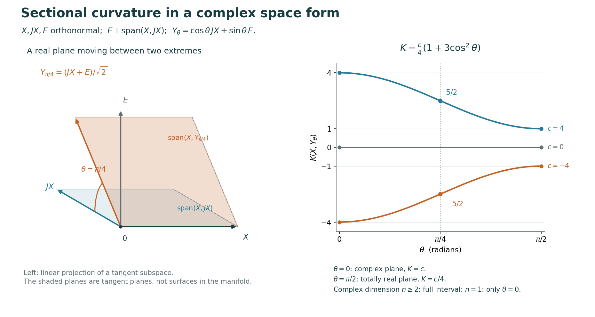

Kähler curvature and Hermitian vector bundles
Self-checked by the writing AI. This chapter proves the bundle connection, curvature and determinant formulas, explicit bundle examples, the Kähler Ricci identities, recovery of curvature from complex lines, the constant holomorphic curvature tensor and Schur theorem, the normalization and global classification of the projective, flat and ball metrics, the holomorphic de Rham product, the determinant-holonomy consequences of Ricci curvature, holomorphic submanifold and subbundle curvature, the diameter, compactness and simple-connectivity theorem for uniformly positive holomorphic curvature, local classification through the complete first-jet construction in both signatures, and the integral first Chern class with its transition-cocycle, curvature, projective and torsion comparisons.
The metric of a holomorphic bundle determines how to differentiate its sections. Taking an exterior derivative then produces a matrix-valued curvature. Its trace is the curvature of a line bundle, while on the tangent bundle the same trace records the Ricci tensor. We establish these statements with one consistent matrix convention.
Manifolds are finite dimensional, smooth, Hausdorff and second countable. A holomorphic bundle has finite complex rank and holomorphic transition functions. In a frame \(e=(e_1,\ldots,e_r)\), section coordinates are columns. Hermitian forms in this chapter are conjugate linear in the first slot: \[ Q(eu,ev)=u^*Bv,\qquad B_{ab}=Q(e_a,e_b). \] The star conjugates coefficients and transposes matrices. For a matrix-valued one-form it also conjugates its scalar form coefficients, without changing their order. Curvature acts by \[ R(X,Y)=D_XD_Y-D_YD_X-D_{[X,Y]}. \] The exterior calculus and smooth Cauchy–Riemann criterion are proved in Complex manifolds and Kähler metrics B.3 and its Theorem A.2. Frame changes and covariant differentiation are proved in Linear and affine connections A.1.
A. A connection determined by a nondegenerate Hermitian form
Theorem A.1 (existence, uniqueness and change of holomorphic frame). Let \(E\) be holomorphic and let \(Q\) be a smooth nondegenerate Hermitian form, with positive or indefinite signature. There is a unique complex connection \(D\) preserving \(Q\) whose \((0,1)\) part is the given holomorphic operator \(\bar\partial_E\). In every holomorphic frame, \[ D(eu)=e(du+Au),\qquad A=B^{-1}\partial B. \tag{A.1} \] Every smooth complex bundle admits a positive Hermitian form.
Proof. In a holomorphic frame define \(\bar\partial_E(eu)=e\,\bar\partial u\), and use the same coefficient rule on bundle-valued forms. If \(e'=eg\), then \(u=gu'\) and \(\bar\partial g=0\). The product rule gives \(\bar\partial(gu')=g\bar\partial u'\), including forms of every degree. Hence the operator is well defined globally. Its square is zero by Complex manifolds B.3. For sections its kernel consists exactly of holomorphic coordinate columns, by the smooth Cauchy–Riemann criterion A.2 of that lesson. We are starting with a holomorphic bundle; no converse about arbitrary operators is needed.
For a connection matrix \(A\), evaluate the compatibility rule on a real tangent vector and on arbitrary columns \(u,v\). Expanding the derivative of \(u^*Bv\) cancels the ordinary derivatives of \(u,v\) and leaves \[ dB=A^*B+BA. \tag{A.2} \] The condition \(D^{0,1}=\bar\partial_E\) is precisely \(A^{0,1}=0\). The \((1,0)\) component of (A.2) is therefore \(\partial B=BA\). Since \(B\) is invertible, this forces (A.1). Conversely, for (A.1), the \((1,0)\) equality holds and its adjoint is \(\bar\partial B=A^*B\), because \(B^*=B\). Their sum proves (A.2). Thus the displayed connection has both required properties locally.
We verify that these formulas patch. The new metric matrix is \(B'=g^*Bg\). Holomorphicity of \(g\) gives \(\partial g^*=0\). Ordinary multiplication and inversion then give \[ \begin{aligned} (B')^{-1}\partial B' &=g^{-1}B^{-1}(g^*)^{-1} \bigl(g^*(\partial B)g+g^*B\,\partial g\bigr)\\ &=g^{-1}Ag+g^{-1}\partial g. \end{aligned} \tag{A.3} \] Here \(\partial g=dg\), so this is exactly the change rule of Linear and affine connections A.1. That theorem constructs the global connection. Its uniqueness follows from the locally forced matrix (A.1). Smooth inversion is proved in Local tools 0.4. The argument required invertibility, never positivity.
For existence of a positive form, choose complex trivializations and the standard squared norm in each. Take a subordinate locally finite smooth partition of unity, furnished by Local tools 3.1. The weighted sum of these forms is smooth, since each weighted term extends by zero away from its chart and the sum is locally finite. It is positive: at every point some weight is positive, all weights are nonnegative, and their sum is one. This is the same local-to-global argument explicitly proved for real metrics in Principal bundles D.2, applied to the complex Euclidean pairing. For rank zero the empty matrix, zero connection and empty determinant give all the assertions with no exception. □
The connection in A.1 is the Chern connection of the given holomorphic bundle and form.
Proposition A.2 (curvature, type and metric compatibility). In a holomorphic frame its curvature and differential identities are \[ \begin{aligned} F&=dA+A\wedge A=\bar\partial A,&\partial A&=-A\wedge A,\\ \bar\partial F&=0,&\partial F&=F\wedge A-A\wedge F. \end{aligned} \tag{A.4} \] Under \(e'=eg\), \(F'=g^{-1}Fg\). For real tangent vectors \(X,Y\), \[ F(X,Y)^*B+BF(X,Y)=0. \tag{A.5} \] In particular \(\operatorname{tr}F\) is a global purely imaginary two-form.
Proof. Expanding \(D_XD_Y-D_YD_X-D_{[X,Y]}\) in a frame cancels all derivatives of the section column, leaving \[ X(A(Y))-Y(A(X))-A([X,Y])+[A(X),A(Y)]. \] The first three terms are \(dA(X,Y)\), by the exterior evaluation formula. Thus the operator has matrix \(dA+A\wedge A\). This calculation and conjugation under a change of coordinates in a fibre are also proved in Curvature and holonomy A.7.
Differentiate \(B^{-1}B=I\) to get \(\partial B^{-1}=-B^{-1}(\partial B)B^{-1}\). Since \(\partial^2=0\), \[ \partial(B^{-1}\partial B) =-B^{-1}(\partial B)B^{-1}\wedge\partial B=-A\wedge A. \] Consequently only \(\bar\partial A\) remains in \(dA+A\wedge A\), proving its \((1,1)\) type. Complex manifolds B.3 gives \[ \bar\partial F=0,\qquad \partial F=-\bar\partial\partial A =\bar\partial(A\wedge A)=F\wedge A-A\wedge F. \] The minus sign in the last product rule comes from the degree one of \(A\).
For (A.5), apply the real operator \(XY-YX-[X,Y]\) to the scalar \(Q(s,t)\). The scalar result is zero. Apply metric compatibility twice to expand it. The two mixed terms \(Q(D_Xs,D_Yt)\) and \(Q(D_Ys,D_Xt)\) cancel their counterparts with \(X,Y\) interchanged. The remaining terms are \[ 0=Q(R(X,Y)s,t)+Q(s,R(X,Y)t). \] Arbitrary columns for \(s,t\) give (A.5). Taking its trace after multiplication by \(B^{-1}\) gives \(\overline{\operatorname{tr}F(X,Y)}=-\operatorname{tr}F(X,Y)\). Trace is invariant under conjugation, since \(\operatorname{tr}(UV)=\operatorname{tr}(VU)\) by the finite entry sum. Therefore it is a global two-form and has the asserted reality property, even in indefinite signature. □
Lemma A.3 (holomorphic normal frames and the mixed Hessian). At a point \(p\), a holomorphic frame can be chosen so that \[ B(p)=S=\operatorname{diag}(\underbrace{1,\ldots,1}_{a}, \underbrace{-1,\ldots,-1}_{b}),\qquad dB(p)=0,\qquad A(p)=0. \tag{A.6} \] If \(F=\sum_{j,k}F_{j\bar k}\,dz^j\wedge d\bar z^k\), then in this frame \[ F_{j\bar k}(p)=-S^{-1}\partial_{\bar k}\partial_jB(p). \tag{A.7} \] In indefinite signature, the factor \(S^{-1}\) cannot be discarded.
Proof. First diagonalize the single Hermitian form at \(p\) by an elementary orthogonal construction. A nonzero Hermitian form has a vector \(v\) with \(Q(v,v)\ne0\): otherwise expanding \(Q(u+v,u+v)\) and \(Q(u+iv,u+iv)\) would make the real and imaginary parts of every \(Q(u,v)\) zero. Divide this vector by \(\sqrt{|Q(v,v)|}\) to give norm \(1\) or \(-1\). Every vector splits uniquely into its component along it and its perpendicular component, by subtracting \(v\,Q(v,x)/Q(v,v)\). The restriction to that complement is nondegenerate: a vector annihilating it and \(v\) annihilates the entire space. Induction produces a basis with matrix \(S\). Apply this constant change to an initial holomorphic frame.
Choose holomorphic coordinates with \(z(p)=0\), and write \(A=\sum_j A_j dz^j\). Set \[ g(z)=I-\sum_j A_j(p)z^j. \] It is holomorphic and invertible on a sufficiently small neighbourhood by continuity of its determinant. Formula (A.3) gives \(A'_j(p)=A_j(p)-A_j(p)=0\), while \(B'(p)=S\). Equation (A.2) then gives \(dB'(p)=0\).
Finally \(F=\bar\partial A\) means \(F_{j\bar k}=-\partial_{\bar k}(B^{-1}\partial_jB)\), because \(d\bar z^k\wedge dz^j=-dz^j\wedge d\bar z^k\). At \(p\) the terms involving a first derivative of \(B\) vanish. The surviving term is (A.7). This establishes both the sign and the signature matrix. □
Proposition A.4 (flatness and holomorphic parallel frames). The Chern connection is flat if and only if it has, near every point, a holomorphic frame in which \(B\) is constant. The frame may be prescribed at the base point.
Proof. A constant \(B\) in a holomorphic frame gives \(A=0\) by (A.1), hence \(F=0\). Conversely, use the correspondence between vector and frame-bundle connections in Linear and affine connections A.2. Curvature and holonomy G.6 proves that a flat principal connection has a smooth horizontal frame on a sufficiently small coordinate ball through any prescribed frame. The resulting sections satisfy \(Ds=0\), and hence \(\bar\partial_Es=0\). A.1 and the smooth Cauchy–Riemann theorem make them holomorphic. Compatibility implies \(dQ(s_j,s_k)=0\); on the connected coordinate ball each pairing is constant, since its derivative along each straight coordinate segment is zero. Thus \(B\) is constant. □
B. What the determinant detects
Theorem B.1 (determinant connection and its real curvature class). The induced connection on \(\det E=\Lambda^rE\) has connection matrix \(\operatorname{tr}A\) and curvature \(\operatorname{tr}F\). For a positive Hermitian form, \[ \begin{aligned} \operatorname{tr}A&=\partial\log\det B,\\ \operatorname{tr}F&=-\partial\bar\partial\log\det B,\\ \eta_E&=\frac{i}{2\pi}\operatorname{tr}F \end{aligned} \tag{B.1} \] defines a global real closed two-form. Its real de Rham class, namely its class modulo exact real two-forms, is independent of the chosen Hermitian connection and of the positive metric.
Proof. Alternating the tensor product connection of Linear and affine connections C.1 gives a connection on \(\Lambda^rE\). Differentiate the local generator \(e_1\wedge\cdots\wedge e_r\). In the term replacing \(e_j\) by \(De_j=\sum_k e_k A^k{}_j\), every \(k\ne j\) repeats a basis vector and vanishes. The remaining coefficient is \(\sum_j A^j{}_j=\operatorname{tr}A\). Its line curvature is \(d\operatorname{tr}A\), since a scalar one-form wedges with itself to zero. Also \[ \operatorname{tr}(A\wedge A) =\sum_{j,k} A^j{}_k\wedge A^k{}_j=0: \] terms with \(j\ne k\) cancel in pairs, and diagonal terms vanish. This proves that the line curvature is exactly \(\operatorname{tr}F\).
Define the induced Hermitian form on decomposable wedges by the determinant of their pairing matrix, and extend sesquilinearly. The alternating determinant identities in DG-CHAR-06 L.1 prove that this descends to the exterior power; their proofs use only field operations and apply over \(\mathbb C\) as explained in Complex manifolds F.1. On the local generator its value is \(\det B\). It is positive: the finite orthogonalization in A.3, with every sign positive, changes \(B\) by \(g^*Bg=I\), giving \(\det B=|\det g|^{-2}>0\). Differentiating the determinant pairing by the tensor rule proves metric compatibility. The induced connection has \((0,1)\) part equal to the holomorphic one, since wedges of a holomorphic frame are holomorphic. A.1 identifies it with the Chern connection of this positive line metric.
For completeness the determinant derivative follows directly from multilinearity. Write \(B(t)=B(0)(I+tC+o(t))\). The determinant of the second factor has constant term \(1\) and linear term \(t\sum_j C_{jj}\): any term changing two columns has at least degree two. Hence \[ \frac d{dt}\det B(t)\bigg|_{t=0} =\det B(0)\operatorname{tr}\bigl(B(0)^{-1}B'(0)\bigr). \] Apply this to each real partial derivative and combine into \(\partial\). Here the real logarithm on positive numbers can be defined by \(\log t=\int_1^t ds/s\); the fundamental theorem and chain rule in Local tools 0.3 give its derivative \(1/t\). This gives the first formula of (B.1). Apply \(\bar\partial\) and use Complex manifolds B.3 to obtain the second. Trace invariance and A.2 show that \(\eta_E\) is global and real. Locally \(\operatorname{tr}F=d\operatorname{tr}A\), so \(d\eta_E=0\).
For two arbitrary complex connections, their difference \(T=D'-D\) is a global endomorphism-valued one-form by Linear and affine connections A.3. Subtract the local trace curvature formulas just proved: \[ \operatorname{tr}F'-\operatorname{tr}F=d\operatorname{tr}T. \tag{B.2} \] If both are Hermitian connections, possibly for different metrics, their normalized trace curvatures are real by A.2's metric calculation. Taking the real part of \(i\operatorname{tr}T/(2\pi)\) in (B.2) therefore expresses their difference as an exact real two-form. This proves the asserted independence. In rank zero the determinant line is the trivial scalar line, and all the forms are zero. □
Example B.2 (the tautological line and its return phase). On \(\mathbb{CP}^n\), \(n\ge1\), the tautological line with its induced Euclidean metric has \[ iF=-2\omega_{\mathrm{FS}},\qquad \eta_{\mathcal O(-1)}=-\frac1\pi\omega_{\mathrm{FS}}. \tag{B.3} \] Its normalized curvature integrates to \(-1\) over each coordinate projective line. Around \(z=re^{it}\), \(0\le t\le2\pi\), in an affine chart of that line, parallel transport has return factor \[ \exp\!\left(-\frac{2\pi i r^2}{1+r^2}\right). \tag{B.4} \]
Proof. Complex manifolds G.1 constructs the projective charts. Above \([Z]\), take the one-dimensional subspace \(\mathbb CZ\) of \(\mathbb C^{n+1}\). In the chart \(Z_a\ne0\), the vector \(s_a=Z/Z_a\) is a nonvanishing holomorphic section, and on overlaps \(s_b=(Z_a/Z_b)s_a\). These explicit invertible holomorphic transitions define the line bundle. The ambient Euclidean pairing restricts to a smooth positive metric. In the \(a=0\) chart, \(s=(1,z^1,\ldots,z^n)\) has squared norm \(b=S=1+|z|^2\). A.1 and A.2 give \[ A=\partial\log S=\frac{\sum_j\bar z^j dz^j}{S},\qquad F=-\partial\bar\partial\log S. \] The proved identity \(\omega_{\mathrm{FS}}=(i/2)\partial\bar\partial\log S\) in Complex manifolds G.1 yields (B.3). On a coordinate projective line the pullback metric is the same \(n=1\) formula, so Complex manifolds G.2, including its full integration argument, gives \(\int\eta_{\mathcal O(-1)}=-\pi^{-1}\int\omega_{\mathrm{FS}}=-1\).
On that line the unitary frame is \(\sigma=s/\sqrt{S}\). The product rule gives \[ A_\sigma=A-\frac12d\log S =\frac{\bar z\,dz-z\,d\bar z}{2S}. \tag{B.5} \] The period in the chosen normalization of \(\pi\) can be checked without assuming a circle integral. For \(0\le u\le1\), put \[ q(u)=\frac{1+iu}{1-iu},\qquad t(u)=2\int_0^u\frac{ds}{1+s^2}. \] Then \(|q|=1\), \(q(0)=1\), \(q(1)=i\), and \(q'/q=2i/(1+u^2)=it'\). The exponential derivative proved in Complex manifolds M.1 shows that \(e^{-it(u)}q(u)\) is constant and hence \(q(u)=e^{it(u)}\). Its real and imaginary parts are \((1-u^2)/(1+u^2)\) and \(2u/(1+u^2)\); they trace the first quadrant once. The definition of \(\pi\) in Complex manifolds A.1 gives \(t(1)=\pi/2\). Concatenate the four arcs obtained by multiplying \(q\) by \(1,i,-1,-i\). Uniqueness for the scalar equation \(z'=iz\) makes this exactly \(e^{it}\), \(0\le t\le2\pi\), and proves the endpoint equality and positive single traversal.
For \(z=re^{it}\) with fixed \(r\), (B.5) is \(ir^2(1+r^2)^{-1}dt\). The column of a parallel section consequently solves \(\xi'=-ir^2(1+r^2)^{-1}\xi\). Differentiating the exponential, whose series and derivative are established in Complex manifolds M.1, gives its solution and (B.4); uniqueness is the transport theorem Linear and affine connections A.2. The frame \(\sigma\) itself has the same value at the two endpoints, so this is the actual return map on the fibre. At \(r=0\) the path is constant and the formula gives \(1\).
As a check on sign, differentiating (B.5) in polar coordinates gives \[ F=\frac{2ir}{(1+r^2)^2}\,dr\wedge dt=2i\omega_{\mathrm{FS}}, \] which agrees with (B.3).
The unitary transition on the two charts of this projective line is equally explicit. Put \(z=Z_1/Z_0\ne0\). Then \(s_1=z^{-1}s_0\), while \(b_1=b_0/|z|^2\), so \[ \sigma_1=\frac{|z|}{z}\,\sigma_0. \] Along \(z=re^{it}\) this multiplier is \(e^{-it}\). The single-traversal calculation above gives its argument change \(-2\pi\), hence winding number \(-1\). This fixes the transition sign directly, consistently with the curvature integral. □
Example B.3 (a curved bundle with a flat determinant). On the trivial holomorphic rank-two bundle over \(\mathbb C\), take \[ B=\begin{pmatrix}1+|z|^2&z\\ \bar z&1\end{pmatrix}. \] This is a positive metric with determinant one. Its Chern connection and curvature are \[ \begin{aligned} A&=\begin{pmatrix} \bar z&1\\ -\bar z^2&-\bar z \end{pmatrix}dz,\\ F&=-\begin{pmatrix} 1&0\\ -2\bar z&-1 \end{pmatrix} dz\wedge d\bar z . \end{aligned} \tag{B.6} \] The bundle connection is not flat, although its determinant connection is the trivial flat connection.
Proof. For a column \((u,v)\), \[ (u,v)^*B(u,v)=|u|^2+|\bar z\,u+v|^2>0 \] unless both entries are zero. Direct multiplication gives \[ \det B=1,\quad B^{-1}=\begin{pmatrix}1&-z\\-\bar z&1+|z|^2\end{pmatrix}, \quad \partial B=\begin{pmatrix}\bar z&1\\0&0\end{pmatrix}dz. \] Multiplying yields \(A\) in (B.6). Differentiating its coefficient in \(\bar z\), with \(d\bar z\wedge dz=-dz\wedge d\bar z\), gives the displayed \(F\). Its upper-left entry never vanishes as a two-form, since \(dz\wedge d\bar z=-2i\,dx\wedge dy\). It is therefore not flat. On the other hand \(\operatorname{tr}A=0\), so B.1 makes the induced determinant connection zero in its global holomorphic frame. This explicitly distinguishes zero trace curvature from zero curvature. □
C. The same trace on a Kähler tangent bundle
For a positive Kähler metric \(g\), let \(J\) denote its complex structure and \(\omega(X,Y)=g(JX,Y)\). The complex bilinear extension of \(g\) is denoted by \(g_{\mathbb C}\). On \(T^{1,0}M\) use the conjugate-first Hermitian metric \[ Q(U,V)=2g_{\mathbb C}(\bar U,V). \] In holomorphic coordinates \(Z_j=\partial/\partial z^j\), set \(h_{j\bar k}=2g_{\mathbb C}(Z_j,\bar Z_k)\), as in Complex manifolds D.3. The matrix for our bundle pairing is consequently \[ B_{jk}=h_{k\bar j},\qquad \det B=\det(h_{j\bar k}). \tag{C.1} \] This transpose matters when writing matrices, although it does not change the determinant.
Proposition C.1 (Chern and Levi-Civita are the same connection). On \(T^{1,0}M\), the Levi-Civita connection of a Kähler metric is its Chern connection. Its real curvature satisfies \[ R(X,Y)J=JR(X,Y),\qquad R(JX,JY)=R(X,Y). \tag{C.2} \]
Proof. Complex manifolds D.2 proves \(\nabla J=0\), so the complexification of \(\nabla\) preserves \(T^{1,0}M\). It preserves \(Q\), by \(\nabla g=0\), reality and the tensor product rule of Linear and affine connections C.1. In holomorphic coordinates, Complex manifolds D.3 proves \(\nabla_{\bar Z_j}Z_k=0\). Thus its \((0,1)\) action on sections is exactly the holomorphic coefficient operator. Uniqueness in A.1 proves the connection identification.
Apply the three terms defining \(R(X,Y)\) to \(JV\), using \(\nabla(JV)=J\nabla V\) each time. This proves the first equality in (C.2). By A.2 the curvature on \(T^{1,0}M\) has type \((1,1)\). Such a two-form takes the same value on \((JX,JY)\) as on \((X,Y)\): after splitting each complexified vector into its \(+i\) and \(-i\) eigenparts, equal-type pairs vanish and each mixed pair acquires the scalar product \(i(-i)=1\). Therefore the difference in the second equality of (C.2) vanishes on \(T^{1,0}M\). Its realness makes it vanish on the conjugate space too, so it is zero on the full real tangent bundle. □
Theorem C.2 (the Ricci tensor and the trace curvature). Define \[ \operatorname{Ric}(X,Y) =\operatorname{tr}_{\mathbb R}\bigl(V\mapsto R(V,X)Y\bigr), \qquad \rho=i\operatorname{tr}_{\mathbb C}F. \] Then \[ \begin{aligned} \operatorname{Ric}(JX,JY)&=\operatorname{Ric}(X,Y),\\ \rho(X,Y)&=\operatorname{Ric}(JX,Y),\\ \rho&=-i\partial\bar\partial\log\det(h_{j\bar k}). \end{aligned} \tag{C.3} \] In particular \(\rho\) is real, closed and of type \((1,1)\).
Proof. Put \(T(X,Y,Z,W)=g(R(X,Y)Z,W)\). The skew symmetries, pair interchange and first Bianchi identity are proved in Geodesics C.2–C.3. Ricci symmetry and its contraction convention are proved in Sectional curvature A.2. C.1 and orthogonality of \(J\) give \[ T(JX,JY,Z,W)=T(X,Y,Z,W),\qquad T(X,Y,JZ,JW)=T(X,Y,Z,W). \] If \((b_\alpha)\) is any real orthonormal basis, so is \((Jb_\alpha)\). Summing \(T(Jb_\alpha,JX,JY,Jb_\alpha)=T(b_\alpha,X,Y,b_\alpha)\) proves the first identity in (C.3).
Choose a real orthonormal paired basis \(e_1,Je_1,\ldots,e_n,Je_n\); Complex manifolds F.1 proves its existence. Write \[ E_a=(e_a-iJe_a)/2. \] The metric calculation in that same proposition gives \(Q(E_a,E_b)=\delta_{ab}\). For any real skew-adjoint operator \(L\) commuting with \(J\), write \[ Le_a=\sum_b(p_{ba}e_b+q_{ba}Je_b). \] Then \(LE_a=\sum_b(p_{ba}+iq_{ba})E_b\). Skew-adjointness gives \(p_{aa}=0\), while \(q_{aa}=g(Le_a,Je_a)\). Therefore \[ i\operatorname{tr}_{\mathbb C}L =-\sum_a g(Le_a,Je_a) =\sum_a g(LJe_a,e_a). \tag{C.4} \] Curvature is such an \(L\), by C.1 and the metric symmetry in Geodesics C.3.
We identify this last sum with the required Ricci contraction. The first-pair \(J\) identity and the paired basis give \[ \begin{aligned} \operatorname{Ric}(JX,Y) &=\sum_a\bigl(T(e_a,JX,Y,e_a)+T(Je_a,JX,Y,Je_a)\bigr)\\ &=\sum_a\bigl(-T(Je_a,X,Y,e_a)+T(e_a,X,Y,Je_a)\bigr). \end{aligned} \tag{C.5} \] Bianchi on \(X,Y,Je_a\), paired with \(e_a\), says \[ T(X,Y,Je_a,e_a)+T(Y,Je_a,X,e_a)+T(Je_a,X,Y,e_a)=0. \] Pair interchange and first-pair skewness give \(T(Y,Je_a,X,e_a)=-T(e_a,X,Y,Je_a)\). Substitution into (C.5) yields \(\operatorname{Ric}(JX,Y)=\sum_a T(X,Y,Je_a,e_a)\). Equation (C.4), with \(L=R(X,Y)\), proves the second formula of (C.3), including its sign and absence of an extra factor two.
Finally C.1 identifies \(F\) with this restriction of \(R\). B.1 and the determinant equality in (C.1) give the last formula of (C.3). Reality, closedness and type also follow from A.2 and B.1. □
Corollary C.3 (constant rescaling and the projective Ricci form). If \(g'=a g\) for a positive constant \(a\), then \[ \rho_{g'}=\rho_g,\qquad \operatorname{Ric}_{g'}=\operatorname{Ric}_g,\qquad \operatorname{Scal}_{g'}=a^{-1}\operatorname{Scal}_g. \tag{C.6} \] For the Fubini–Study normalization in Complex manifolds G.1, \[ \rho_{\mathrm{FS}}=2(n+1)\omega_{\mathrm{FS}},\qquad \operatorname{Ric}_{\mathrm{FS}}=2(n+1)g_{\mathrm{FS}}, \qquad \operatorname{Scal}_{\mathrm{FS}}=4n(n+1). \tag{C.7} \]
Proof. Constant rescaling preserves the Kähler condition and changes \(B\) to \(aB\). Formula (A.1) leaves the connection matrix unchanged. Hence \(F\) and \(\rho\) are unchanged. The complex structure is also unchanged, so (C.3) gives equality of the two Ricci tensors: substitute \(JX\) for \(X\), or equivalently use \(\operatorname{Ric}(X,Y)=\rho(X,JY)\). To trace this tensor with \(g'\), divide each vector of a \(g\)-orthonormal real basis by \(\sqrt a\). Its \(2n\) diagonal terms each acquire the factor \(a^{-1}\), proving the scalar relation.
For projective space, Complex manifolds G.1 proves \(\det(h_{j\bar k})=(1+|z|^2)^{-(n+1)}\). C.2 therefore gives \[ \rho_{\mathrm{FS}} =i(n+1)\partial\bar\partial\log(1+|z|^2) =2(n+1)\omega_{\mathrm{FS}}. \] These local equalities concern global forms and thus agree on all charts. Equation (C.3) and \(\omega(X,JY)=g(X,Y)\) give the Ricci tensor in (C.7). Its trace in real dimension \(2n\) is \(4n(n+1)\). For \(a g_{\mathrm{FS}}\), the same tensor is \(2(n+1)a^{-1}g'\), and the scalar curvature is \(4n(n+1)/a\), as required by (C.6). □
D. Recovering curvature from complex lines
For a nonzero real tangent vector on a positive Kähler manifold, define \[ H(X)=\frac{g(R(X,JX)JX,X)}{g(X,X)^2}. \tag{D.1} \] This is the sectional curvature of its complex line. Indeed \(X,JX\) are orthogonal and have equal length. The free notes of Bielawski, §4.4, discuss this curvature and its projective and ball models. We give the algebraic recovery explicitly, before applying it to the metrics already constructed in the programme.
Lemma D.1 (coefficient recovery from the holomorphic quartic). Let \(V\) be a real vector space with a nondegenerate symmetric form \(g\) and a \(g\)-orthogonal complex structure \(J\). Let \(T\) be a real algebraic curvature four-tensor, with the skew symmetries, pair interchange and first Bianchi identity, and suppose \[ T(JX,JY,Z,W)=T(X,Y,Z,W),\qquad T(X,Y,JZ,JW)=T(X,Y,Z,W). \tag{D.2} \] Then the real polynomial \(q(X)=T(X,JX,JX,X)\) determines \(T\). No positivity is needed for this assertion.
Proof. Extend \(T,g,J\) complex linearly and let \(V^+\), \(V^-\) be the \(i,-i\) eigenspaces of \(J\). Their decomposition is explicit: \[ X^+=(X-iJX)/2,\qquad X^-=(X+iJX)/2. \] For real \(X\) these are conjugate. If the first two inputs of \(T\) both belong to \(V^+\), applying \(J\) to them multiplies the value by \(-1\); (D.2) says the value is unchanged. It is therefore zero. The same proof applies to two inputs in \(V^-\), and to either equal-type last pair. Consequently it suffices to recover \[ S(U,\bar V,W,\bar Z)=T(U,\bar V,W,\bar Z) \quad(U,V,W,Z\in V^+). \] First Bianchi on \(U,\bar V,W\) has its third term zero. First-pair skewness then gives \[ T(U,\bar V,W,\bar Z)=T(W,\bar V,U,\bar Z). \] Thus \(S\) is symmetric in its two holomorphic inputs. Pair interchange, followed by that symmetry, makes it symmetric in its two antiholomorphic inputs as well.
Choose a complex basis \(E_1,\ldots,E_n\) of \(V^+\). Such a basis can be obtained from a real basis \(e_1,Je_1,\ldots,e_n,Je_n\): choose \(e_1\ne0\), then inductively choose a vector outside the previous \(J\)-invariant span. Each new vector and its \(J\) image are independent modulo that span, since a nonzero real combination \(a+bJ\) has inverse \((a-bJ)/(a^2+b^2)\). The resulting \(E_j=(e_j-iJe_j)/2\) form the desired basis. Write \[ \begin{aligned} U(z)&=\sum_j z^jE_j,\\ P(z,\bar z)&=T(U(z),\overline{U(z)},U(z),\overline{U(z)})\\ &=\sum_{a,b,c,d}C_{a\bar b c\bar d}\, z^a\bar z^b z^c\bar z^d,\\ C_{a\bar b c\bar d}&=T(E_a,\bar E_b,E_c,\bar E_d). \end{aligned} \tag{D.3} \] Every \(U\in V^+\) equals \(X^+\) for the real vector \(X=U+\bar U\). Expanding the first and last pairs with their skew symmetries gives \[ \begin{aligned} T(X^+,\overline{X^+},\,\cdot\,,\,\cdot\,) &=\frac{i}{2}T(X,JX,\,\cdot\,,\,\cdot\,),\\ T(X,JX,X^+,\overline{X^+}) &=\frac{i}{2}T(X,JX,X,JX),\\ P(z,\bar z)&=\frac14 q(U(z)+\overline{U(z)}). \end{aligned} \tag{D.4} \] The signs in the last line use \(T(X,JX,X,JX)=-q(X)\).
Here is a direct recovery formula, including repeated indices. Put \(z^j=x^j+iy^j\) and use \(\partial_{z^j}=(\partial_{x^j}-i\partial_{y^j})/2\), \(\partial_{\bar z^j}=(\partial_{x^j}+i\partial_{y^j})/2\). Their values on the coordinate functions are \(\partial_{z^j}z^k=\delta_{jk}\), \(\partial_{z^j}\bar z^k=0\), and the conjugate identities. The product rule therefore yields \[ C_{a\bar b c\bar d} =\frac14\left. \partial_{z^a}\partial_{z^c} \partial_{\bar z^b}\partial_{\bar z^d}P \right|_{z=0}. \tag{D.5} \] There are two choices for the differentiated holomorphic factor and two for the antiholomorphic factor. The two separate symmetries of \(C\) make their four contributions equal. If indices repeat, differentiating a square supplies exactly the same factor two, so the formula still holds.
Thus the given real quartic determines \(P\), then every mixed coefficient by ordinary real differentiation. Equal-type pairs are zero, and each other ordering is reduced to (D.3) by the two skew symmetries. Multilinearity recovers every value of \(T\). For \(V=0\) the tensor is zero and the conclusion is immediate. □
Theorem D.2 (constant holomorphic curvature and all real contractions). On a positive Hermitian real vector space of dimension \(2n\), \(n\geq1\), a Kähler algebraic curvature tensor has \(H(X)=c\) for all nonzero \(X\) if and only if \[ \begin{aligned} R(X,Y)Z=\frac c4\bigl(&g(Y,Z)X-g(X,Z)Y\\ &+g(JY,Z)JX-g(JX,Z)JY\\ &+2g(X,JY)JZ\bigr). \end{aligned} \tag{D.6} \] For real orthonormal \(X,Y\) this gives \[ \begin{aligned} K(X,Y)&=\frac c4\bigl(1+3g(JX,Y)^2\bigr),\\ \operatorname{Ric}&=\frac{n+1}{2}c\,g,\\ \operatorname{Scal}&=n(n+1)c. \end{aligned} \tag{D.7} \] For \(n\geq2\) the sectional curvatures attain every value between \(c/4\) and \(c\), including both endpoints; the order of the endpoints reverses when \(c<0\). For \(n=1\) the only sectional value is \(c\).
Proof. Define \(R_c\) by the right side of (D.6) and put \(\Omega(X,Y)=g(JX,Y)\). Orthogonality and \(J^2=-I\) imply that \(\Omega\) is skew. Pairing the proposed operator with \(W\) gives \[ \begin{aligned} T_c(X,Y,Z,W)=\frac c4\bigl(& g(Y,Z)g(X,W)-g(X,Z)g(Y,W)\\ &+\Omega(Y,Z)\Omega(X,W)-\Omega(X,Z)\Omega(Y,W)\\ &-2\Omega(X,Y)\Omega(Z,W)\bigr). \end{aligned} \tag{D.8} \] This formula also applies when \(c=0\).
We verify its curvature identities rather than assume them. The first two lines are each skew on exchanging \(X,Y\), and exchanging \(Z,W\) gives the same negation by commutativity of scalar multiplication. The last line is skew in both pairs since \(\Omega\) is. Exchanging the pairs \((X,Y)\) and \((Z,W)\) preserves each line, using skewness twice for the second line and commutativity for the last.
The cyclic sum over \(X,Y,Z\) of the first line is zero by cancellation of its six products. For the second line this sum is \[ 2\bigl(\Omega(X,Y)\Omega(Z,W) +\Omega(Y,Z)\Omega(X,W) +\Omega(Z,X)\Omega(Y,W)\bigr). \] The cyclic sum of the last line is its negative. Thus first Bianchi holds. Replacing \(X,Y\) by \(JX,JY\) exchanges the first two lines, because \(g(JX,Z)=\Omega(X,Z)\) and \(\Omega(JX,Z)=-g(X,Z)\). It preserves the last line since \(\Omega(JX,JY)=\Omega(X,Y)\). This proves the first identity in (D.2); pair interchange proves the other. Hence \(T_c\) is a Kähler algebraic curvature tensor.
Substitution in (D.6) yields \[ R_c(X,JX)JX=c\,g(X,X)X. \] Indeed its first, fourth and fifth terms are respectively \(g(X,X)X\), \(g(X,X)X\) and \(2g(X,X)X\) before multiplication by \(c/4\); the other two vanish. Therefore its quartic is \(c\,g(X,X)^2\). If \(R\) has holomorphic sectional curvature \(c\), its quartic is the same, also at \(X=0\). Apply D.1 to the difference to obtain \(T=T_c\). Nondegeneracy of \(g\) then gives \(R=R_c\). This proves both directions.
For orthonormal \(X,Y\), substitute \(Z=Y,W=X\) in (D.8). The first line is \(1\), the second is \(\Omega(X,Y)^2\), and the last contributes \(2\Omega(X,Y)^2\). This proves the sectional formula.
For a unit vector \(X\), complete it to a real orthonormal basis \(b_1=X,b_2,\ldots,b_{2n}\), using the paired-basis construction of Complex manifolds F.1. The Ricci convention of Sectional curvature A.2 gives \[ \begin{aligned} \operatorname{Ric}(X,X) &=\sum_{\alpha=2}^{2n}K(b_\alpha,X)\\ &=\frac c4\left(2n-1+ 3\sum_{\alpha=2}^{2n}g(JX,b_\alpha)^2\right) =\frac{n+1}{2}c. \end{aligned} \] The sum of squares is \(g(JX,JX)=1\), and its missing \(\alpha=1\) term is zero. Scaling proves the diagonal identity for every real \(X\). Since Ricci is symmetric by Sectional curvature A.2, the identity \(2B(X,Y)=B(X+Y,X+Y)-B(X,X)-B(Y,Y)\) for a symmetric bilinear form proves the full Ricci formula. Tracing in \(2n\) real dimensions proves the scalar formula.
Finally \(|g(JX,Y)|\leq1\): subtract its projection on \(JX\) from the unit vector \(Y\) and take the squared norm. If \(n\geq2\), choose a unit \(E\) perpendicular to \(X,JX\) by Complex manifolds F.1 and put \(Y=tJX+\sqrt{1-t^2}\,E\), \(0\leq t\leq1\). This is unit and perpendicular to \(X\), and \(g(JX,Y)=t\). Every squared value in \([0,1]\) is obtained. If \(n=1\), every unit \(Y\perp X\) equals \(JX\) or \(-JX\), giving only \(c\). □
Corollary D.3 (Kähler Schur, with its precise dimension restriction). Suppose a connected Kähler manifold has complex dimension \(n\geq2\). If at each point its holomorphic sectional curvature is independent of the complex line, its value is constant on the manifold, and its curvature is parallel. The constancy conclusion fails in complex dimension one, even for complete metrics.
Proof. C.1 and the curvature symmetries in Geodesics C.2–C.3 give the hypotheses of D.2 at each point. If the pointwise value is denoted by \(c(p)\), D.2 gives \[ \operatorname{Ric}=\lambda g,\qquad \lambda=(n+1)c/2. \] No regularity assumption on \(c\) is necessary: its scalar contraction gives \(c=\operatorname{Scal}/(n(n+1))\), a smooth function by Sectional curvature A.2. Sectional curvature A.3 proves from the contracted Bianchi identity that \(\lambda\) is constant in real dimension at least three. Here the real dimension is \(2n\geq4\), so \(c\) is constant. Formula (D.6), \(\nabla g=0\), \(\nabla J=0\) from Complex manifolds D.2, and the tensor product rule of Linear and affine connections C.1 give \(\nabla R=0\).
For the last assertion take the standard complex coordinate \(z=x+iy\) on \(\mathbb C\) and the metric \[ g=(2+\cos x)^2(dx^2+dy^2). \] It is positive Hermitian and hence Kähler by Complex manifolds D.4. Sectional curvature A.5 proves its completeness and computes \[ K(x,y)=\frac{1+2\cos x}{(2+\cos x)^4}. \] This changes sign between \(x=0\) and \(x=\pi\). There is only one real two-plane in a real two-dimensional tangent space, and it is the complex line. Thus independence of the line holds at every point, while the holomorphic sectional curvature is nonconstant. □
Proposition D.4 (the projective, flat and ball normalizations). With \(\omega=(i/2)\partial\bar\partial\phi\), the metrics defined by \[ \begin{array}{c|c|c} \text{space}&\text{potential in its stated chart}&H\\ \hline \mathbb{CP}^n&\log(1+|z|^2)&4\\ \mathbb C^n&|z|^2&0\\ \mathbb B^n=\{z:|z|<1\}&-\log(1-|z|^2)&-4 \end{array} \tag{D.9} \] are complete Kähler metrics for \(n\geq1\). The projective potential is local on each affine chart; the other two are global. Their Ricci tensors are respectively \(2(n+1)g\), \(0\), and \(-2(n+1)g\), and their scalar curvatures are \(4n(n+1)\), \(0\), and \(-4n(n+1)\). Multiplication of a metric by \(a>0\) divides its holomorphic and real sectional curvatures by \(a\).
Proof. For the projective and ball cases take \(p=1,q=n\) in Hermitian symmetric spaces L.1–L.2. Those theorems prove their holomorphic transitive group actions, invariant complete Kähler metrics and the entire domains. Hermitian symmetric spaces AL.1 proves that their exact potentials and two-form normalization are the ones in (D.9); Complex manifolds G.1 also identifies the projective metric in these scalar coordinates. Thus no completeness conclusion is drawn from a single affine chart.
For clarity the local curvature scale can be checked directly. Put \(\epsilon=1\) for the projective chart and \(\epsilon=-1\) for the ball, and \(S=1+\epsilon|z|^2\). Twice differentiating \(\phi=\epsilon\log S\) gives \[ \begin{aligned} h_{j\bar k}&=\frac{\delta_{jk}}S -\frac{\epsilon\,\bar z^j z^k}{S^2},\\ B_{jk}&=\frac{\delta_{jk}}S -\frac{\epsilon\,z^j\bar z^k}{S^2}. \end{aligned} \tag{D.10} \] The transpose is exactly (C.1). At zero \(B=I\) and \(dB=0\). Differentiating the rational expressions at zero, where every remaining term with a coordinate factor vanishes, gives \[ \partial_a\partial_{\bar b}B_{jk}(0) =-\epsilon\bigl(\delta_{ab}\delta_{jk} +\delta_{ja}\delta_{kb}\bigr). \] A.2, or the normal-frame formula A.3, therefore gives \[ \begin{aligned} F_{a\bar b}(0)&=\epsilon(\delta_{ab}I+E_{ab}),\\ T(Z_a,\bar Z_b,Z_c,\bar Z_d)(0) &=\frac{\epsilon}{2} (\delta_{ab}\delta_{cd}+\delta_{bc}\delta_{ad}). \end{aligned} \tag{D.11} \] where \(E_{ab}Z_c=\delta_{bc}Z_a\). The second formula uses C.1 and \(g_{\mathbb C}(Z_j,\bar Z_k)(0)=\delta_{jk}/2\). For \(U=\sum u^a Z_a\), (D.11) gives \(T(U,\bar U,U,\bar U)=\epsilon |u|^4\). The real vector \(X=U+\bar U\) has squared norm \(|u|^2\). Formula (D.4) now gives \(H(X)=4\epsilon\) at zero.
The transitive actions in Hermitian symmetric spaces L.1–L.2 are holomorphic isometries. An isometry preserves the Levi-Civita connection: transporting it gives a metric-compatible torsion-free connection, equal to the original by Riemannian connections A.1. It therefore preserves \(R\), and holomorphicity preserves \(J\). Hence (D.1) is preserved. Transitivity carries the computed value to every point and every nonzero tangent vector.
For the middle row the Hessian of \(|z|^2\) is \(I\), so \(B=I\), \(A=0\), and \(F=0\) by A.1–A.2. C.1 identifies this with real zero curvature. Its metric is the Euclidean metric by Complex manifolds D.3. Straight lines are its geodesics, since Riemannian connections A.1 gives zero coefficients; they extend for all real times. Alternatively its distance is the Euclidean norm by the path-length inequality and the straight segment, and finite-dimensional completeness is Local tools 0.1.
Apply D.2 with \(c=4,0,-4\) to obtain all Ricci and scalar values. Finally C.3 proves that a constant rescaling leaves the connection and its curvature operator unchanged. In either the real sectional quotient or (D.1), its numerator is multiplied by \(a\) and its denominator by \(a^2\). Both sectional curvatures are divided by \(a\). In particular \(a g_{\mathrm{FS}}\) has holomorphic sectional curvature \(4/a\), Ricci form \(2(n+1)\omega_{\mathrm{FS}}\), Ricci tensor \(2(n+1)a^{-1}(a g_{\mathrm{FS}})\), and scalar curvature \(4n(n+1)/a\). □

Figure D.1. Theorem D.2 evaluates the orthonormal pair \(X,Y_\theta=\cos\theta\,JX+\sin\theta\,E\), where \(E\) is perpendicular to the complex line of \(X\). The left panel is a linear projection of these exact tangent vectors and the two indicated planes, with \(\theta=\pi/4\); it is not an embedding of a manifold. The right panel plots \(K=(c/4)(1+3\cos^2\theta)\) for \(c=4,0,-4\). At \(\theta=0\) the plane is complex; at \(\theta=\pi/2\) it is orthogonal to its image under \(J\). The complete family requires complex dimension at least two. In dimension one only the complex plane occurs. The formula is proved in D.2; the free source for its complex-curvature setting is Roger Bielawski's author-hosted notes, §4.4, linked in Further reading. Vector figure · Reproducible plotting source. New figure and code: CC0 1.0.

E. Global geometry from parallel tensors
The curvature calculation has a global consequence because its tensor is built entirely from the parallel tensors \(g,J\) and a constant. We use the complete smooth continuation theorem in Killing fields C.1. In particular, the following arguments impose no extra analytic-coordinate assumption.
Theorem E.1 (extending an initial complex isometry). Let \(M,N\) be connected smooth Kähler manifolds of the same complex dimension \(n\geq1\) and the same constant holomorphic sectional curvature \(c\). Given \(p\in M\), \(q\in N\) and a real linear isometry \[ L:T_pM\longrightarrow T_qN,\qquad LJ_p=J_qL, \] there is a unique germ at \(p\) of a holomorphic local isometry with value \(q\) and differential \(L\). If both manifolds are complete and simply connected, that germ extends uniquely to a global holomorphic isometry \(M\to N\).
Proof. Theorem D.2 gives the curvature formula (D.6) on both manifolds. Their Levi-Civita connections have zero torsion by Riemannian connections A.1. Metric compatibility, \(\nabla J=0\) from Complex manifolds D.2, constancy of \(c\), and the tensor product rule in Linear and affine connections C.1 show that their curvature tensors are parallel. This argument applies also in complex dimension one; no use of the dimension restriction in D.3 is made.
Apply \(L\) to every term of (D.6). Since it preserves \(g\) and intertwines \(J\), one obtains \[ L\bigl(R_p(X,Y)Z\bigr)=R_q(LX,LY)LZ. \] It also carries the zero torsion tensor to zero. Killing fields C.1 now supplies the unique local affine isomorphism \(f\) with the specified value and differential. That theorem proves its smooth parallel-data assertion by radial connection equations, proves the compatible analytic atlas, and proves the global extension under completeness and simple connectivity. Thus its regularity hypothesis has been proved within the programme.
We check that the affine map has the required metric and complex properties. Because \(f\) is affine, the tensor rules in Linear and affine connections C.1 give \[ \nabla(f^*g_N-g_M)=0. \] The tensor in parentheses is zero at \(p\). In a parallel frame along any path beginning there, its coefficients are constant, and therefore remain zero. Parallel transport and this coefficient rule are proved in Linear and affine connections A.2 and C.1. Any point in a connected manifold is reachable by a finite piecewise smooth path: coordinate balls are path connected, making each path component open, and connectedness leaves one component. Consequently \(f\) is a local isometry on a connected representative of the germ.
Similarly the pulled-back endomorphism \[ \widetilde J_x=(df_x)^{-1}J_{f(x)}df_x \] is parallel, because \(f\) is affine and \(J_N\) is parallel. It agrees with \(J_M\) at \(p\), so the same path argument gives \(\widetilde J=J_M\). Complex manifolds A.2, applied in the given complex coordinate charts, says exactly that this smooth map is holomorphic. Its inverse differential also intertwines the complex structures, so the local inverse is holomorphic too.
When both manifolds are complete and simply connected, use the global affine isomorphism furnished by Killing fields C.1. The same two parallel-tensor arguments on connected \(M\) make it an isometry and make it and its inverse holomorphic everywhere. Finally every local or global isometry is affine by Riemannian connections A.3. The affine uniqueness in Killing fields C.1 therefore proves both uniqueness assertions here. □
Theorem E.2 (the complete simply connected holomorphic space forms). A connected complete simply connected Kähler manifold of complex dimension \(n\geq1\) with constant holomorphic sectional curvature \(c\) is holomorphically isometric to \[ \begin{array}{c|c} c>0&(\mathbb{CP}^n,(4/c)g_{\mathrm{FS}})\\ c=0&(\mathbb C^n,g_{\mathrm{eucl}})\\ c<0&(\mathbb B^n,(-4/c)g_{\mathrm{ball}}) \end{array} \tag{E.1} \] with the potential normalizations of D.4. Every listed model has the stated hypotheses and curvature. This includes \(n=1\).
Proof. Theorem D.4 proves that the three displayed unscaled metrics are complete Kähler and have curvatures \(4,0,-4\). Constant positive scaling keeps the connection and its complete geodesics unchanged by C.3, and divides holomorphic sectional curvature by the scale by D.4. The scales in (E.1) are positive and give precisely \(c\).
We verify the topology needed to apply E.1. The ball and complex Euclidean space are convex; the homotopy \((s,t)\mapsto(1-s)\gamma(t)+s\gamma(0)\) contracts every based loop while fixing its base point. Straight segments also prove connectedness. Projective space is the \(p=1,q=n\) compact Grassmannian of Hermitian symmetric spaces L.1. Its actual quotient, with its full stabilizer, is simply connected by Hermitian symmetric spaces AK.1; the proof there checks the special-unitary presentation and invokes the completely proved compact Hermitian simple-connectivity theorem. Connectedness is proved in L.1. Hence each model is connected, complete and simply connected with no implicit covering replacement.
At any chosen point of the given manifold and any chosen point of its model, choose paired real orthonormal bases \(e_1,Je_1,\ldots,e_n,Je_n\). Complex manifolds F.1 proves their existence. The linear map sending each source pair to the corresponding target pair is an isometry and intertwines \(J\). Theorem E.1 extends it to a global holomorphic isometry. Conversely the previous two paragraphs verify all hypotheses for each model itself. No step excludes \(n=1\), since the curvature is assumed globally constant at the outset. □
Example E.3 (why the global hypotheses matter). Completeness and simple connectivity cannot be removed from E.2. Connectedness is needed to conclude that the manifold is one model rather than a disjoint union of models.
Proof. For completeness, take the Euclidean metric on the open unit ball in \(\mathbb C^n\), \(n\geq1\), with its standard complex structure. It is Kähler and flat because its metric matrix is \(I\), so its Chern and Levi-Civita connections are zero as in D.4. The ball is connected and simply connected by convexity. The geodesic \(t\mapsto te_1\), starting at zero with unit velocity, cannot extend to \(t=1\) inside the ball: a continuous extension in \(\mathbb C^n\) would have value \(e_1\), which lies outside it. The local geodesic uniqueness of Geodesics A.1 proves that no different continuation can fix this failure. Thus it is incomplete and cannot be isometric to the complete zero-curvature model in (E.1). Completeness is essential for the extension to cover the entire model.
For simple connectivity, take \[ T=\mathbb C^n/(\mathbb Z^n+i\mathbb Z^n) \] with its descended Euclidean metric and complex structure. Complex manifolds H.1 proves the quotient atlas, compactness, flat Kähler metric and completeness for every full real lattice. The quotient is connected as the continuous image of connected \(\mathbb C^n\). The projection \(q:\mathbb C^n\to T\) is a covering: balls of radius less than \(1/3\) have disjoint lattice translates, and their full inverse images give its sheets, as in that theorem's chart construction.
The loop \(t\mapsto q(te_1)\), \(0\leq t\leq1\), has its lift starting at zero equal to \(te_1\), ending at \(e_1\). If the loop had a based contraction, the homotopy-lifting theorem in Flat connections D.1 would lift that contraction with fixed initial point. The endpoints of its lifted loops would be a continuous path in the discrete fibre \(q^{-1}(q(0))\), and hence constant: locally a continuous path into a discrete set is constant, and the interval is connected. The terminal constant loop has lift ending at zero, contradicting the first endpoint \(e_1\). Thus \(T\) is not simply connected. It is not globally isometric to \(\mathbb C^n\), since a diffeomorphism preserves contractions of loops. This shows exactly why a complete local model need not already be its simply connected global model.
Finally the disjoint union of two copies of \(\mathbb C^n\), each with the Euclidean Kähler structure, has zero curvature and every geodesic is defined for all time in its component. Each component is simply connected. The union has two connected components, so no diffeomorphism takes it to the connected model in (E.1). Without connectedness the correct statement must be made separately on each component. □
Theorem E.4 (the holomorphic de Rham product). Every nonempty connected complete simply connected Kähler manifold has a holomorphic isometric product decomposition \[ M\cong\mathbb C^{n_0}\times M_1\times\cdots\times M_k, \tag{E.2} \] where each \(M_i\) is complete, simply connected and Kähler with nontrivial irreducible real holonomy. The complex dimension \(n_0\) is intrinsic, and the nonflat factors are unique up to holomorphic isometry and permutation. Zero-dimensional factors are omitted.
Proof. De Rham decomposition E.3 gives a Riemannian isometry \[ \mathbb R^d\times M_1\times\cdots\times M_k\longrightarrow M \] with the stated completeness, simple connectivity and nontrivial irreducible real holonomy on each \(M_i\). Pull \(J\) back to this product. It is orthogonal, parallel and squares to \(-I\), by Complex manifolds D.2 and invariance of Levi-Civita connections under isometry in Riemannian connections A.3. At a product base point write its orthogonal tangent splitting as \[ V=V_0\oplus V_1\oplus\cdots\oplus V_k. \] De Rham decomposition E.1 proves that its full holonomy is the product of the factor holonomies \(H_i\), with \(H_i\) acting only on \(V_i\). The fixed subspace is exactly \(V_0\). Parallelness of \(J\) implies \[ Jh=hJ\quad\text{for every holonomy element }h: \tag{E.3} \] along a loop, \(J\) of a parallel vector is parallel and starts at \(J\) of the initial vector, so transport uniqueness in Linear and affine connections A.2 gives (E.3).
For a vector fixed by every \(h\), (E.3) says that its image under \(J\) is fixed as well. Thus \(J(V_0)=V_0\), with equality because \(J^{-1}=-J\). For \(i>0\), \(J(V_i)\) is an irreducible nontrivial holonomy-invariant subspace: \(J\) is an invertible intertwiner. The uniqueness argument in De Rham decomposition E.3 proves that every such subspace is one of the \(V_j\), \(j>0\). It cannot be a different \(V_j\). If it were, every \(h\in H_i\) would act as the identity on \(J(V_i)\). Choosing \(h\in H_i\) and \(v\in V_i\) with \(hv\ne v\), possible because the action is nontrivial, would give \[ J(hv-v)=hJv-Jv=0, \] contradicting invertibility of \(J\). Therefore \(J(V_i)=V_i\) for every \(i\).
This invariance holds for the whole factor distributions. They are parallel by the de Rham theorem. At any other point transport the tangent splitting from the base point along a piecewise smooth path. Since \(J\) commutes with this transport, it preserves each transported summand. The derivative rule in Linear and affine connections C.1 and the factorwise connection in De Rham decomposition E.1 show in addition that its restriction to one factor is independent of all the other coordinates. Explicitly, along a path varying only the other coordinates, a vector tangent to that fixed factor and constant in its own coordinate is parallel. So is its image under \(J\), which is still tangent to the same factor. Its components in that fixed tangent space are consequently constant. The other factors are connected and path connected, so this proves independence of their coordinates.
We obtain endomorphisms \(J_i\) on the individual \(M_i\), and a constant endomorphism \(J_0\) on \(\mathbb R^d\). Each is orthogonal, squares to \(-I\), and is parallel for its factor's Levi-Civita connection. Complex manifolds D.2 proves directly that a parallel orthogonal complex structure for a torsion-free metric connection has zero Nijenhuis tensor and closed fundamental form. Complex manifolds N.1 proves the full smooth converse from zero Nijenhuis tensor to complex charts. Applied to each factor, these give actual complex atlases and Kähler metrics. Thus no integrability theorem is left as an external reference.
On the Euclidean factor, choose an orthonormal paired basis for \(J_0\) by Complex manifolds F.1. This forces \(d=2n_0\) and supplies a real linear isometry \(\mathbb C^{n_0}\to\mathbb R^d\) intertwining the standard complex structure and \(J_0\). It and its inverse are holomorphic by Complex manifolds A.2. On the whole product, the original Riemannian isometry now intertwines the product complex structure and the given \(J\). The same smooth Cauchy–Riemann criterion makes it and its inverse holomorphic. This proves (E.2).
For uniqueness, De Rham decomposition E.3 makes \(V_0\), the nontrivial tangent summands, their parallel distributions and their based leaves intrinsic up to permutation. Their complex structures above are precisely the restrictions of the fixed tensor \(J\). Consequently two holomorphic isometric decompositions identify the same leaves, with the same induced metrics and complex structures, after that permutation. Restricting their product maps to the based axes gives holomorphic isometries of the corresponding nonflat factors. The Euclidean dimension \(d\) is intrinsic, so \(n_0=d/2\) is intrinsic too. If \(M\) is a point, take \(n_0=k=0\); all assertions reduce to the unique map of that point. □
F. What the Ricci form says about holonomy
Let \(M\) be connected and Kähler of complex dimension \(n\geq1\). At \(p\), write \(H_p\) for the full Levi-Civita holonomy, \(H_p^0\) for its restricted holonomy and \(\mathfrak h_p\) for their common Lie algebra. Parallel transport preserves \(g,J\), so these groups act complex linearly and unitarily on \((T_pM,J_p)\). The restricted group is connected and normal in the full group by Curvature and holonomy C.5. We identify this complex tangent space with \(T_p^{1,0}M\) by \(v\mapsto(v-iJv)/2\); this map intertwines every transport and its complex-linear extension.
Theorem F.1 (Ricci curvature and the determinant character). The following are equivalent:
- \(\operatorname{Ric}=0\) everywhere.
- \(\operatorname{tr}_{\mathbb C}A=0\) for every \(A\in\mathfrak h_p\), at one and hence every point \(p\).
- \(H_p^0\subset SU(T_pM,J_p,g_p)\), at one and hence every point.
- The induced Chern connection on \(\det T^{1,0}M\), or equivalently on the canonical bundle \(K_M=(\det T^{1,0}M)^*\), is flat.
Full holonomy satisfies \(H_p\subset SU(n)\) if and only if \(K_M\) has a nowhere-zero global parallel section. Such a section is holomorphic. In particular, on a simply connected Ricci-flat Kähler manifold there is a nowhere-zero parallel holomorphic \(n\)-form.
Proof. C.1 identifies the tangent Chern connection with Levi-Civita. C.2 gives \[ \rho(X,Y)=i\operatorname{tr}_{\mathbb C}R(X,Y) =\operatorname{Ric}(JX,Y). \tag{F.1} \] Here the trace may be computed on \((TM,J)\) by the intertwining identification above. Since \(J\) is invertible, \(\rho=0\) is equivalent to \(\operatorname{Ric}=0\).
Curvature and holonomy G.3 and its tangent formulation G.5 give the exact finite-dimensional span \[ \mathfrak h_p=\operatorname{span}_{\mathbb R} \{P_\gamma^{-1}R_q(u,v)P_\gamma: \gamma:p\to q,\ u,v\in T_qM\}. \tag{F.2} \] Every \(P_\gamma\) intertwines the complex structures, so the complex trace of a displayed generator is the trace of \(R_q(u,v)\). If Ricci vanishes everywhere, (F.1) makes all these traces zero, proving 2. Conversely every curvature value at every \(q\), transported to \(p\), belongs to this algebra. Condition 2 and trace invariance therefore make \(\rho_q=0\) everywhere. This proves \(1\Longleftrightarrow2\), including the assertion that a test at one base point suffices.
For a connected matrix Lie group, its Lie algebra exponentials generate it; De Rham decomposition F.1 proves this from the local exponential chart and connectedness. The same proof establishes \[ \det_{\mathbb C}(I+tA+o(t)) =1+t\operatorname{tr}_{\mathbb C}A+o(t). \] Consequently \(d(t)=\det_{\mathbb C}(\exp(tA))\) satisfies \(d'=(\operatorname{tr}_{\mathbb C}A)d,\ d(0)=1\). When every trace in the algebra is zero, every exponential has determinant one. Multiplicativity and connected generation put all of \(H_p^0\) in \(SU(n)\). Conversely if \(H_p^0\subset SU(n)\), differentiating the determinant along each of its one-parameter subgroups gives trace zero. This proves \(2\Longleftrightarrow3\).
B.1 proves that the determinant connection has curvature \(\operatorname{tr}_{\mathbb C}R\). The dual connection has its negative: differentiating the pairing of a section and its dual gives the negative scalar connection form, and differentiating once more gives the negative curvature. Thus both line connections are flat exactly when \(\rho=0\). This proves 4.
Transport on the determinant is the exterior product of tangent transport. Indeed the exterior product of parallel vectors is parallel by the induced derivative rule in B.1, and uniqueness in Linear and affine connections A.2 identifies the resulting transports. In a fixed determinant frame its loop action is therefore \(\det_{\mathbb C}h\). On the dual line it is \((\det_{\mathbb C}h)^{-1}\).
Reduction and holonomy A.3 proves that a vector fixed by full holonomy extends uniquely to a smooth global parallel section, and that every parallel section arises this way. A nonzero vector of a one-dimensional complex space is fixed by a scalar exactly when that scalar is one. The preceding loop action proves the full-holonomy assertion. Its parallel extension stays nonzero because all transports are invertible. The induced connection has \((0,1)\) part \(\bar\partial\), by the exterior and dual derivative rules applied to A.1. A parallel section is therefore holomorphic by the smooth Cauchy–Riemann criterion of Complex manifolds A.2. Finally on a simply connected base every loop is nullhomotopic, so \(H_p=H_p^0\) by Curvature and holonomy C.5. □
Theorem F.2 (irreducibility and the complex-structure circle). Suppose the real representation of the full holonomy \(H_p\) is irreducible and Ricci is not identically zero. Then \[ J_p\in\mathfrak h_p,\qquad \{\cos t\,I+\sin t\,J_p:t\in\mathbb R\}\subset H_p^0. \tag{F.3} \] In particular \(J_p\in H_p^0\). The same conclusion holds if restricted real holonomy is irreducible. In that latter case the centre of \(\mathfrak h_p\) is exactly \(\mathbb R J_p\).
Without any irreducibility assumption, if \(J_p\in H_p^0\) and \(n\) is not divisible by four, then Ricci is not identically zero. The integer in this assertion is the complex dimension \(n\).
Proof. Abbreviate \(J=J_p\), \(H=H_p\) and \(\mathfrak h=\mathfrak h_p\). Use on real skew-adjoint operators the inner product \[ (A,B)_*=-\operatorname{tr}_{\mathbb R}(AB). \] Its positivity and invariance under orthogonal conjugation are proved explicitly in De Rham decomposition F.1. Let \(A\) be the orthogonal projection of \(J\) onto \(\mathfrak h\). For \(h\in H\), conjugation preserves \(\mathfrak h\), because \(H^0\) is normal, and preserves this inner product. It fixes \(J\), since \(h\) is complex linear. Orthogonal projection is unique, so \(hAh^{-1}=A\).
Every element of \(\mathfrak h\) commutes with \(J\): differentiate the corresponding group commutation. Thus \(A\) and \(J\) are commuting skew-adjoint operators. The operator \(S=-JA\) is self-adjoint and commutes with \(H\). Any such operator on a real irreducible orthogonal representation is scalar. Here is the precise finite-dimensional reason: the real spectral theorem proved in De Rham decomposition H.2 supplies a real eigenvalue and a nonzero eigenspace; that eigenspace is \(H\)-invariant, hence is the entire space. Therefore \(S=aI\) and \(A=aJ\).
For a complex-linear real operator \(B\), its paired real matrix gives \[ \operatorname{tr}_{\mathbb R}(JB) =-2\operatorname{Im}\operatorname{tr}_{\mathbb C}B. \tag{F.4} \] The calculation is included in De Rham decomposition F.1: each complex diagonal coefficient \(x+iy\) contributes \(2x\) to the real trace and \(-2y\) after multiplication by \(J\). For skew-adjoint complex-linear \(B\), the complex trace is purely imaginary. By F.1, nonzero Ricci somewhere means that some \(B\in\mathfrak h\) has nonzero complex trace. Equation (F.4) gives \((J,B)_*\ne0\). The projection \(A\) is consequently nonzero, so \(a\ne0\) and \(J=a^{-1}A\in\mathfrak h\).
Exponentiating \(tJ\) stays in \(H^0\). The matrix function \(\cos t\,I+\sin t\,J\) has derivative \(J\) times itself and initial value \(I\), since \(J^2=-I\). Uniqueness of the matrix ODE, Linear and affine connections A.2, identifies it with \(\exp(tJ)\). The circle parametrization and quarter-period normalization proved in B.2 give \(\exp((\pi/2)J)=J\).
If \(H^0\) is irreducible, then \(H\) is irreducible too, so the previous conclusion applies. For \(Z\) in the centre of \(\mathfrak h\), commutation with every algebra element implies commutation with every exponential, and hence with \(H^0\). Moreover \(ZJ=JZ\), since \(Z\in\mathfrak h\). The self-adjoint operator \(-JZ\) commutes with \(H^0\), and its irreducibility makes it scalar by the same spectral argument. Thus \(Z\in\mathbb RJ\). Conversely \(J\in\mathfrak h\) commutes with all of \(\mathfrak h\), proving the centre assertion.
Finally the complex matrix of \(J\) is \(iI_n\), so its complex determinant is \(i^n\). If Ricci were identically zero, F.1 would put \(H^0\) in \(SU(n)\); membership of \(J\) would force \(i^n=1\). Writing \(n=4k+r\) with \(0\leq r<4\) gives the four possibilities \(1,i,-1,-i\), so this is equivalent to \(4\mid n\). This proves the contrapositive claimed. This determinant argument alone makes no assertion when \(4\mid n\). □
Theorem F.3 (nondegenerate Ricci at one point). If \(\operatorname{Ric}_p\) is nondegenerate at even one point \(p\) of a connected Kähler manifold, then \[ J_q\in\mathfrak h_q \quad\hbox{and}\quad \{\exp(tJ_q):t\in\mathbb R\}\subset H_q^0 \quad\text{for every }q\in M. \tag{F.5} \] No completeness, simple connectivity or irreducibility is required.
Proof. The proof of De Rham decomposition F.2 supplies the following structure without completeness. On the smooth universal cover with its pulled-back metric, full holonomy equals restricted holonomy downstairs. At a lift of \(p\) it gives \[ V=V_0\perp V_1\perp\cdots\perp V_k,\qquad H^0=\{I_{V_0}\}\times H_1\times\cdots\times H_k,\qquad \mathfrak h=\bigoplus_{j=1}^k\mathfrak h_j. \tag{F.6} \] Each \(H_j\) is connected and acts nontrivially and irreducibly on \(V_j\); its operators and its algebra act only on that summand. The fixed subspace is \(V_0\). The summands extend to parallel distributions upstairs. Mixed curvature is zero, and curvature with both inputs in one summand acts only there, by that theorem and De Rham decomposition C.3. We use this local structure, not a global complete product.
The parallel complex structure preserves every summand in (F.6). It preserves \(V_0\), because it commutes with holonomy. For \(i>0\) and \(j\ne i\), including \(j=0\), consider \(T=\pi_jJ|_{V_i}\). The orthogonal projections commute with the block holonomy. Thus for \(h\in H_i\), \(Th=T\), since \(H_i\) acts trivially on \(V_j\). The kernel of \(T\) is \(H_i\)-invariant. If \(T\ne0\), irreducibility would make this kernel zero. But some \(h\in H_i,v\in V_i\) satisfy \(hv-v\ne0\), and \(T(hv-v)=0\), a contradiction. All these cross projections vanish, proving \(J(V_i)\subset V_i\); invertibility gives equality. Write \(J_i=J|_{V_i}\). Parallel transport extends this preservation to the distributions.
The real Ricci form is block diagonal. To see this directly, use an orthonormal basis adapted to the parallel splitting in the trace \(\operatorname{Ric}(u,v)=\sum_a g(R(e_a,u)v,e_a)\). The mixed-curvature and support identities following (F.6) make a summand zero unless \(e_a,u,v\) all belong to the same nonfixed block. Curvature vanishes on the fixed block as proved in De Rham decomposition F.2. Hence \(\operatorname{Ric}\) vanishes on \(V_0\), has no cross terms, and its block on \(V_i\) is the contraction of the curvature supported there.
Nondegeneracy at \(p\) forces \(V_0=0\) and makes every block \(\operatorname{Ric}_i\) nondegenerate, in particular nonzero. Choose \(u,v\in V_i\) with \(\operatorname{Ric}_i(J_i u,v)\ne0\), possible because \(J_i\) is invertible. C.2, or its paired-basis calculation restricted to this block, gives \[ i\operatorname{tr}_{\mathbb C} \bigl(R_p(u,v)|_{V_i}\bigr) =\operatorname{Ric}_i(J_i u,v)\ne0. \tag{F.7} \] Curvature and holonomy G.5 puts \(R_p(u,v)\) in \(\mathfrak h\). Its support is only \(V_i\), so it belongs to \(\mathfrak h_i\).
The projection argument in F.2 is finite-dimensional: for an irreducible connected unitary group, a nonzero trace on its algebra forces its complex structure to belong to that algebra. Apply that proved argument to \(H_i,V_i,J_i\), using the element in (F.7). It gives \(J_i\in\mathfrak h_i\). Since \(V_0=0\), summing the supported operators in (F.6) yields \(J_p=\sum_i J_i\in\mathfrak h_p\).
For any path from \(p\) to \(q\), Curvature and holonomy C.5 identifies the holonomy algebras by conjugation with transport. Parallelness of \(J\) gives \(P_\gamma J_pP_\gamma^{-1}=J_q\). Thus \(J_q\in\mathfrak h_q\) at every point, and exponentiation gives the second assertion. The covering identification in De Rham decomposition F.2 takes these conclusions back to the original manifold. □
Example F.4 (Ricci-flatness need not trivialize full determinant holonomy). There is a connected complete flat Kähler surface whose restricted holonomy is trivial and whose full holonomy has complex determinant values \(1\) and \(-1\). Its canonical bundle has no nonzero global parallel section.
Proof. On \(\mathbb C^2\) with Euclidean metric let \[ a(z,w)=(z+1,-w),\qquad a^k(z,w)=(z+k,(-1)^k w),\quad k\in\mathbb Z. \] Every \(a^k\) is a holomorphic isometry; if it fixes a point then its first coordinate gives \(k=0\). Let \(M\) be the set of its orbits with the quotient topology, and \(q:\mathbb C^2\to M\) the projection.
We verify the quotient properties. The projection is open because the saturation of any open set is the union of its translates. A Euclidean ball of radius less than \(1/3\) has disjoint translates: two points in it have first-coordinate difference of modulus less than \(2/3\), whereas points related by a nonzero \(a^k\) have first-coordinate difference the nonzero integer \(k\). Each such ball therefore maps homeomorphically to an open quotient chart, and all its translates give the covering sheets.
For two points \(u=(z,w)\), \(v=(z',w')\) in different orbits, the distance \(|u-a^kv|\) has a positive lower bound. Its first coordinate tends to infinity with \(|k|\), so only finitely many integers can give distance below \(|u-v|+1\). None gives zero, and the minimum of the finitely many relevant positive distances, together with this positive cutoff, is positive. Since every \(a^k\) is an isometry, sufficiently small balls about \(u,v\) then have disjoint quotient images. Thus \(M\) is Hausdorff. Images of a countable Euclidean basis give a countable quotient basis, since \(q\) is open.
On overlapping covering charts, lifts differ locally by one \(a^k\). Indeed their first-coordinate difference is an integer and is continuous, hence locally constant. The transitions are therefore holomorphic isometries. The Euclidean metric and complex structure descend to a smooth Kähler structure: its fundamental form has constant coefficients in the lifted charts and is closed, so Complex manifolds D.2 applies. Its curvature is zero in the lifted charts. The quotient is connected as a continuous image of \(\mathbb C^2\). For every initial tangent vector, lift it to \(u,\xi\) upstairs. The projected line \(q(u+t\xi)\) is a geodesic for all real \(t\); local connection invariance under isometries is Riemannian connections A.3, and geodesic uniqueness is Geodesics A.1. Thus the metric is geodesically complete, and Hopf–Rinow B.2 proves metric completeness.
Lift a based loop at \(q(0,0)\) starting at \((0,0)\), using Flat connections D.1. Its endpoint is \((k,0)\) for some integer \(k\). Euclidean parallel transport is the identity in the standard trivialization. Differentiating \(q\circ a^k=q\) shows that the resulting loop transport at the base is represented by \[ (da^k)^{-1}=\operatorname{diag}(1,(-1)^k). \] The loop \(t\mapsto q(t,0)\), \(0\leq t\leq1\), realizes \(k=1\). Hence full holonomy consists exactly of the two displayed matrices, and its determinant values are \(1,-1\). Restricted holonomy is trivial by F.1's curvature-span proof, or directly by (F.2) with zero curvature and connected exponential generation. The final assertion follows from F.1 because full holonomy is not contained in \(SU(2)\). □
G. Curvature under holomorphic inclusions and quotients
Let \(f:M^m\to\overline M^N\) be a holomorphic immersion into a Kähler manifold, and give \(M\) the induced metric. The dimensions here are complex dimensions. Tangent and normal bundles are taken over \(M\), inside \(f^*T\overline M\); no injectivity or completeness of the immersion is assumed. Write \(\alpha\) for its second fundamental form, \(D\) for the pulled-back ambient connection, and \(J^\perp\) for the ambient complex structure on the normal bundle.
Theorem G.1 (complex second fundamental form and minimality). The induced metric is Kähler. Both its tangent connection and its normal connection preserve their complex structures, and \[ \begin{aligned} \alpha(X,JY)&=\alpha(JX,Y)=J^\perp\alpha(X,Y),\\ \alpha(JX,JY)&=-\alpha(X,Y). \end{aligned} \tag{G.1} \] For the shape operators, \[ A_{J^\perp\xi}=JA_\xi,\qquad A_\xi J=-JA_\xi. \tag{G.2} \] The mean curvature vector is zero, so the immersion is minimal.
Proof. The smooth Cauchy–Riemann criterion in Complex manifolds A.2 says \(df\circ J=\overline J\circ df\). Hence the tangent subbundle is \(\overline J\)-invariant. Its perpendicular is invariant too: for a normal vector \(\xi\), \[ \overline g(\overline J\xi,dfY) =-\overline g(\xi,\overline JdfY)=0. \] The two orthogonal projections therefore commute with \(\overline J\).
Submanifolds A.1 proves the projected connection formulas \[ D_XdfY=df(\nabla_XY)+\alpha(X,Y),\qquad D_X\xi=-df(A_\xi X)+\nabla_X^\perp\xi, \] with \(\nabla\) equal to the induced Levi-Civita connection, \(\alpha\) symmetric, and \(g(A_\xi X,Y)=\overline g(\alpha(X,Y),\xi)\). Since the ambient structure is Kähler, \(D\overline J=0\) by Complex manifolds D.2 and the pullback derivative rule in Linear and affine connections C.1. Apply this equality first to \(dfY\), and project to the tangent and normal parts. It gives \(\nabla_X(JY)=J\nabla_XY\) and \(\alpha(X,JY)=J^\perp\alpha(X,Y)\). Symmetry gives the same identity in the first input; applying both identities gives the second line of (G.1). Apply \(D\overline J=0\) to a normal field to obtain \(\nabla_X^\perp(J^\perp\xi)=J^\perp\nabla_X^\perp\xi\). The source is already a complex manifold. Its induced Hermitian metric and \(\nabla J=0\) make it Kähler by Complex manifolds D.2.
For the shape formulas, pair against arbitrary \(Y\). Orthogonality of both complex structures and (G.1) give \[ \begin{aligned} g(JA_\xi X,Y) &=-\overline g(\alpha(X,JY),\xi) =\overline g(\alpha(X,Y),J^\perp\xi),\\ g(A_\xi JX,Y) &=\overline g(J^\perp\alpha(X,Y),\xi) =-g(A_{J^\perp\xi}X,Y). \end{aligned} \] Nondegeneracy of \(g\) proves (G.2).
For \(m>0\), choose the paired orthonormal tangent basis \(E_1,JE_1,\ldots,E_m,JE_m\), whose existence is proved in Complex manifolds F.1. The mean curvature vector, by definition, is \[ \frac1{2m}\sum_{a=1}^m \bigl(\alpha(E_a,E_a)+\alpha(JE_a,JE_a)\bigr)=0 \] by (G.1). For a zero-dimensional source the second fundamental form and its trace are zero, and the assertion has that direct interpretation. □
Theorem G.2 (holomorphic Gauss and Ricci formulas). For \(X\ne0\), \[ \mathcal H_M(X) =\mathcal H_{\overline M}(dfX) -\frac{2|\alpha(X,X)|^2}{|X|^4}. \tag{G.3} \] For any tangent \(X\) and paired orthonormal basis as in G.1, \[ \begin{aligned} \operatorname{Ric}_M(X,X) ={}&\sum_{a=1}^m \overline g(\overline R(dfE_a,dfX)dfX,dfE_a)\\ &+\sum_{a=1}^m \overline g(\overline R(dfJE_a,dfX)dfX,dfJE_a)\\ &-2\sum_{a=1}^m|\alpha(E_a,X)|^2. \end{aligned} \tag{G.4} \] If the ambient holomorphic sectional curvature is the constant \(c\), then \[ \operatorname{Ric}_M(X,X) =\frac{m+1}{2}c\,|X|^2 -2\sum_{a=1}^m|\alpha(E_a,X)|^2. \tag{G.5} \] Nonpositive ambient holomorphic sectional curvature is inherited by the induced metric. In a flat complex ambient space both its holomorphic sectional curvature and its Ricci tensor are nonpositive. In the constant-\(c\) case, equality in the Ricci upper bound for every \(X\) at a point is equivalent to \(\alpha=0\) there; so is equality in (G.3) for every \(X\) there.
Proof. The full Gauss equation, with our sign convention, is proved in Submanifolds A.2. Omitting \(df\) only within this calculation, it says \[ \begin{aligned} g(R(U,V)W,Z) ={}&\overline g(\overline R(U,V)W,Z)\\ &+\overline g(\alpha(V,W),\alpha(U,Z)) -\overline g(\alpha(U,W),\alpha(V,Z)). \end{aligned} \tag{G.6} \] Take \(U=X,V=JX,W=JX,Z=X\). By (G.1), the two extra terms are respectively \(-|\alpha(X,X)|^2\) and \(-|J^\perp\alpha(X,X)|^2\). Orthogonality of \(J^\perp\) makes their sum \(-2|\alpha(X,X)|^2\). Divide by \(|X|^4\) to obtain (G.3).
Next substitute \(U=b,V=X,W=X,Z=b\) and sum over a real orthonormal tangent basis \(b\). The first extra sum is \(\overline g(\alpha(X,X),\sum_b\alpha(b,b))=0\) by G.1. The other is \(-\sum_b|\alpha(b,X)|^2\). For each paired basis vector, (G.1) gives \(|\alpha(JE_a,X)|=|\alpha(E_a,X)|\). The Ricci definition in C.2 now gives (G.4).
When the ambient holomorphic curvature is \(c\), D.2 gives its full real curvature tensor. All terms of that formula preserve the complex tangent subspace when its three inputs are tangent: they use only its metric, its \(J\) and those inputs. The trace over this subspace is consequently exactly D.2's paired-basis contraction in real dimension \(2m\), namely \((m+1)c|X|^2/2\). This proves (G.5); the ambient dimension \(N\) does not replace \(m\).
The sign assertions follow because squared norms are nonnegative. Equality in (G.5) for every \(X\) forces each \(\alpha(E_a,X)=0\), and (G.1) then forces \(\alpha(JE_a,X)=0\), so bilinearity gives \(\alpha=0\). Equality in (G.3) for all \(X\) forces \(\alpha(X,X)=0\); the real polarization identity \[ 2\alpha(U,V)=\alpha(U+V,U+V)-\alpha(U,U)-\alpha(V,V) \] gives the same conclusion. Conversely \(\alpha=0\) makes all the equalities immediate. When this holds everywhere, the projected connection formula of G.1 shows that intrinsic geodesics are ambient geodesics; this is the totally geodesic case. □
Example G.3 (a complete curved holomorphic graph). The graph \[ f:\mathbb C\longrightarrow\mathbb C^2,\qquad f(z)=(z,z^2) \] with its induced Euclidean metric is complete and has \[ g=(1+4|z|^2)|dz|^2,\qquad K(z)=\mathcal H(z)=-\frac8{(1+4|z|^2)^3}. \tag{G.7} \] More generally every entire holomorphic graph over \(\mathbb C^m\), with the metric induced from a Euclidean complex space, is complete and has nonpositive holomorphic sectional curvature and Ricci tensor.
Proof. The differential of the first component of a graph is the identity, so the graph is an immersion. For the displayed graph, \[ |df_z(v)|^2=|v|^2+|2zv|^2 =(1+4|z|^2)|v|^2. \] Put \(h=1+4(x^2+y^2)\). By C.2, \(\rho=-i\partial\bar\partial\log h\). The coordinate derivatives of Complex manifolds B.3 give \(\partial\bar\partial u=(\Delta u/4)\,dz\wedge d\bar z\); the fundamental form is \(\omega=(ih/2)\,dz\wedge d\bar z\). In real dimension two, Ricci equals \(Kg\), by the orthonormal contraction in Sectional curvature A.2. Therefore C.2 yields \[ K=-\frac{\Delta\log h}{2h}. \] Direct differentiation gives \[ \partial_x\log h=\frac{8x}{h},\quad \partial_y\log h=\frac{8y}{h},\quad \Delta\log h=\frac{16}{h} -\frac{64(x^2+y^2)}{h^2} =\frac{16}{h^2}. \] This proves (G.7). A complex curve has only one real tangent two-plane, so \(K=\mathcal H\).
For any graph \(z\mapsto(z,F(z))\), its metric satisfies \[ g_z(v,v)=|v|^2+|dF_z(v)|^2\geq |v|^2. \] The Euclidean metric is complete by the finite-dimensional completeness in Local tools 0.1. Hopf–Rinow C.1 proves that a smooth metric bounded below by a complete one is complete, requiring no global upper bound. This proves completeness for both the example and every entire graph. G.1 makes the induced metrics Kähler, and G.2 supplies both curvature sign conclusions. □
Theorem G.4 (holomorphic subbundle and quotient curvature). Let \(S\subset E\) be a holomorphic subbundle of a positive Hermitian holomorphic bundle. Give \(S\) its induced metric and \(Q=E/S\) the quotient metric. Identify \(Q\) smoothly and isometrically with \(S^\perp\). If \(\beta\) is the \(S^\perp\)-component of the ambient Chern derivative on \(S\), then \(\beta\) has type \((1,0)\). In smooth adapted unitary frames, \[ A_E=\begin{pmatrix}A_S&-\beta^*\\ \beta&A_Q\end{pmatrix}. \tag{G.8} \] Here the star takes the fibre adjoint and conjugates form coefficients. The projected diagonal connections are the Chern connections of \(S,Q\), and \[ \begin{aligned} F_S&=P_SF_E|_S+\beta^*\wedge\beta,\\ F_Q&=P_{S^\perp}F_E|_{S^\perp}+\beta\wedge\beta^* . \end{aligned} \tag{G.9} \] For \(Z\) of type \((1,0)\), write \(B=\beta(Z)\). Then \[ \begin{aligned} F_S(Z,\bar Z)&=P_SF_E(Z,\bar Z)|_S-B^*B,\\ F_Q(Z,\bar Z)&=P_{S^\perp}F_E(Z,\bar Z)|_{S^\perp}+BB^* . \end{aligned} \tag{G.10} \] Thus curvature decreases on holomorphic subbundles and increases on holomorphic quotients, in the order of Hermitian endomorphisms evaluated on \((Z,\bar Z)\).
Proof. The local holomorphic frames defining a holomorphic subbundle can be extended to holomorphic frames of \(E\); their remaining classes are local holomorphic frames of \(Q\). Orthogonal projection gives a smooth splitting \(E=S\oplus S^\perp\). Its smoothness follows by the Gram-matrix inverse formula, as in Submanifolds A.1, applied to the positive Hermitian pairing. The quotient map restricts to a complex-linear bijection \(S^\perp_x\to Q_x\) on every fibre; use that bijection to define the quotient metric.
Project the Chern derivative onto \(S\) and \(S^\perp\). These are metric connections, by differentiating pairings and orthogonality. Since \(S\) is holomorphic, \(\bar\partial_E\) preserves its smooth sections. The projected \(S\)-connection has \((0,1)\) part \(\bar\partial_S\). On the quotient, if a section is represented by its orthogonal lift \(\tilde q\), the class of \(\bar\partial_E\tilde q\) is exactly \(\bar\partial_Qq\): replacing the lift by a section of \(S\) changes its derivative only by a section of \(S\) in this type. Thus the projected quotient connection has the required \((0,1)\) part as well. Uniqueness in A.1 identifies both projected connections with their Chern connections.
Choose smooth unitary frames of the two summands by finite Gram–Schmidt. Smoothness of the inverse and positive square root used in this construction is established in Local tools 0.4 and 0.0. The lower-left block of the ambient connection is \(\beta\). It has no \((0,1)\) component because that derivative preserves \(S\). On real tangent vectors the ambient connection matrix in a unitary frame is skew-adjoint, by metric compatibility in A.1, so the upper-right block is \(-\beta^*\). This proves (G.8).
The general frame curvature formula \(F=dA+A\wedge A\), derived in A.2, is valid also in these smooth frames. Its diagonal blocks are \[ (F_E)_{SS}=dA_S+A_S\wedge A_S-\beta^*\wedge\beta,\qquad (F_E)_{QQ}=dA_Q+A_Q\wedge A_Q-\beta\wedge\beta^*. \] These give (G.9). Since \(\beta(\bar Z)=0\), one has \(\beta^*(Z)=0\) and \(\beta^*(\bar Z)=B^*\). Evaluating the wedge products yields respectively \(-B^*B\) and \(BB^*\), proving (G.10).
These are Hermitian endomorphisms. Indeed metric curvature compatibility on real inputs in A.2, complexified and conjugated, gives \(F(Z,\bar Z)^*=F(Z,\bar Z)\); the sign is reversed once more by interchanging the two curvature inputs. Orthogonal compressions preserve self-adjointness. Finally \(\langle B^*Bu,u\rangle=|Bu|^2\) and \(\langle BB^*v,v\rangle=|B^*v|^2\). Their nonnegativity proves the asserted order. In a flat ambient bundle this makes \(F_S(Z,\bar Z)\) negative semidefinite and \(F_Q(Z,\bar Z)\) positive semidefinite. The tautological line of B.2 is one example of the first conclusion. □
H. Positive holomorphic curvature and global topology
Throughout this section the metric is positive definite. A lower bound on holomorphic sectional curvature controls the single parallel normal direction \(J\dot\gamma\) along a geodesic. The diameter and simple-connectivity conclusions below are due to Yotaro Tsukamoto, whose freely accessible original paper is listed in Further reading. We give all the variation and covering steps explicitly.
Theorem H.1 (the diameter bound and compactness). Suppose a connected complete Kähler manifold of positive complex dimension satisfies \[ \mathcal H(X)\geq\delta>0\quad\text{for every }X\ne0. \] Then \[ \operatorname{diam}M\leq\frac{\pi}{\sqrt\delta}, \qquad M\text{ is compact}. \tag{H.1} \]
Proof. Hopf–Rinow B.2 supplies a minimizing unit-speed geodesic \(\gamma:[0,\ell]\to M\) between any two distinct points, where \(\ell\) is their distance. Put \(T=\dot\gamma\). The vector field \(JT\) is parallel because \(\nabla J=0\), proved in Complex manifolds D.2, and \(\nabla_TT=0\). It is unit and perpendicular to \(T\). Define the endpoint-zero field \[ V(t)=\sin(\pi t/\ell)\,JT(t). \] Jacobi fields A.2 realizes it by a variation fixing both endpoints.
Every curve in that variation has length at least \(\ell\). On the parameter interval of length \(\ell\), its energy satisfies \[ E(s)=\frac12\int_0^\ell|\partial_tF(s,t)|^2dt \geq\frac1{2\ell} \left(\int_0^\ell|\partial_tF(s,t)|dt\right)^2 \geq\frac{\ell}{2}=E(0). \tag{H.2} \] The first inequality is the integral Cauchy–Schwarz inequality proved in Local tools 0.3. Thus \(E''(0)\geq0\). Jacobi fields A.4, including its endpoint terms, identifies this second derivative with \[ \begin{aligned} I(V,V) &=\int_0^\ell \bigl(|\nabla_TV|^2-g(R(V,T)T,V)\bigr)\,dt\\ &\leq\int_0^\ell \left(\frac{\pi^2}{\ell^2}\cos^2(\pi t/\ell) -\delta\sin^2(\pi t/\ell)\right)dt\\ &=\frac{\ell}{2}\left(\frac{\pi^2}{\ell^2}-\delta\right). \end{aligned} \tag{H.3} \] For the curvature term, the two skew symmetries proved in Geodesics C.3 give \(g(R(JT,T)T,JT)=g(R(T,JT)JT,T)=\mathcal H(T)\). For the last equality, Sectional curvature B.2 proves the sine and cosine derivatives and endpoint values. Their squared sum is one, while the integral of their squared difference is zero by integrating the derivative of \((\ell/\pi)\sin(\pi t/\ell)\cos(\pi t/\ell)\). Thus both squared integrals equal \(\ell/2\).
Nonnegativity in (H.3) forces \(\ell\leq\pi/\sqrt\delta\). Since the two endpoints were arbitrary, this proves the diameter estimate. The whole space is a closed bounded subset of itself, so completeness and Hopf–Rinow B.2 make it compact. □
Lemma H.2 (a holomorphic isometry has a fixed point). On a compact connected Kähler manifold with \(\mathcal H(X)>0\) for every nonzero \(X\), every holomorphic isometry has a fixed point.
Proof. Let \(a:M\to M\) be a holomorphic isometry. Suppose it has no fixed point. The continuous function \(x\mapsto d(x,a(x))\) attains a positive minimum \(\ell\) at some \(p\). Distance continuity is Riemannian connections A.2, and the compact minimum property is Local tools 0.1. Compactness implies completeness by Hopf–Rinow B.3. Choose a minimizing unit-speed segment \(\gamma:[0,\ell]\to M\) from \(p\) to \(a(p)\), using Hopf–Rinow B.2, and write \(T=\dot\gamma\).
We first prove the endpoint velocity relation \[ T(\ell)=da_pT(0). \tag{H.4} \] For any \(v\in T_pM\), let \(P_t\) be parallel transport along \(\gamma\), and put \[ U(t)=P_t\bigl((1-t/\ell)v+(t/\ell)P_\ell^{-1}da_pv\bigr). \] It is a smooth field with \(U(0)=v\) and \(U(\ell)=da_pv\). Form \(F(s,t)=\exp_{\gamma(t)}(sU(t))\). The uniform small-\(s\) construction and its variation field are proved in Jacobi fields A.2. An isometry preserves the connection by Riemannian connections A.3 and hence carries a geodesic to the geodesic with its transformed initial velocity, by Geodesics A.1. Therefore \[ F(s,\ell)=a(F(s,0)). \] The distance between these endpoints is at least the global minimum \(\ell\). The energy inequality (H.2) consequently applies to this variation as well, so \(E'(0)=0\). The first variation in Jacobi fields A.3 gives \[ 0=g(da_pv,T(\ell))-g(v,T(0)) =g(v,da_p^{-1}T(\ell)-T(0)). \] As this holds for every \(v\), nondegeneracy proves (H.4).
Now use instead the parallel normal field \(V=JT\). Holomorphicity means \(da\) intertwines \(J\), by Complex manifolds A.2. Hence (H.4) gives \(V(\ell)=da_pV(0)\). The exponential variation with this field again has endpoints related by \(a\), and its energy has a minimum at \(s=0\). Its endpoint curves are geodesics in the \(s\)-parameter; their covariant accelerations are zero. The full second-variation formula in Jacobi fields A.4 therefore gives \[ E''(0)=I(JT,JT) =-\int_0^\ell g(R(JT,T)T,JT)\,dt =-\int_0^\ell\mathcal H(T(t))\,dt<0. \tag{H.5} \] The strict inequality follows from continuity and positivity on the compact nonempty parameter interval. It contradicts the nonnegative second derivative at a minimum. Thus \(a\) has a fixed point. On a zero-dimensional connected manifold there is one point and the assertion is immediate. □
Theorem H.3 (simple connectivity under a uniform positive bound). Every connected complete Kähler manifold with \(\mathcal H(X)\geq\delta>0\) for every nonzero \(X\) is compact and simply connected and has diameter at most \(\pi/\sqrt\delta\). In particular these conclusions hold for a complete connected Kähler manifold of positive constant holomorphic sectional curvature.
Proof. In positive complex dimension, compactness and the bound are H.1. Let \(q:\widetilde M\to M\) be the connected smooth universal cover constructed in Flat connections D.2. It is Hausdorff and second countable as proved there. Lift each complex chart of \(M\) to each of its covering sheets. On overlaps the transition functions are restrictions of those of the base, so these charts make \(\widetilde M\) a complex manifold and \(q\) a holomorphic local diffeomorphism.
Give it the pullback metric. In the lifted charts this is the original Kähler metric, so it is Kähler, and \(q\) is a local isometry. Hopf–Rinow E.4 proves that a Riemannian covering of a complete manifold is complete. Riemannian connections A.3 preserves Levi-Civita connections under local isometries; applying the defining curvature commutator then preserves curvature as well. Since \(dq\) also preserves \(J\) and lengths, the same bound \(\mathcal H\geq\delta\) holds upstairs. H.1 now makes \(\widetilde M\) compact.
Every deck transformation \(a\) of this cover is a holomorphic isometry. Indeed \(q\circ a=q\), so in lifted charts it preserves the complex coordinates, and \(a^*q^*g=(q\circ a)^*g=q^*g\). Lemma H.2 gives it a fixed point. But Flat connections D.2 proves that the deck action of \(\pi_1(M)\) on its universal cover is free and that every deck transformation comes from this action. Thus every element of \(\pi_1(M)\) is the identity. This proves simple connectivity. It also shows concretely that the cover has one sheet, since the same theorem proves that this action is transitive on every fibre.
For constant holomorphic sectional curvature \(c>0\), take \(\delta=c\). A connected zero-dimensional manifold is a point, so compactness, simple connectivity and diameter zero hold directly in that case. □
I. First jets and local model coordinates
The first jet of a section records its value and first derivatives at one point. A line metric converts that data into a Hermitian form on a bundle of rank \(n+1\). Martin de Borbon's freely available preprint develops this construction and its relation to constant holomorphic curvature. We give the construction and the complete calculation for both signatures, in the curvature normalization of this chapter.
Let \(M\) have complex dimension \(n\geq1\), with a positive Kähler metric. In local coordinates use \[ G_{ij}=G_{i\bar j}=2g_{\mathbb C}(\partial_i,\partial_{\bar j}), \qquad \omega=\frac i2\sum_{i,j}G_{ij}\,dz^i\wedge d\bar z^j, \qquad C=G^{-1}. \tag{I.1} \] The row and column positions in the matrix \(G\) are as displayed. The conjugate-first Hermitian matrix on tangent coefficients is \(G^t\), by C.1. Its dual matrix on cotangent columns is \(C\), as verified in the proof of I.1.
Fix \(\varepsilon\in\{1,-1\}\). Suppose a positive Hermitian holomorphic line bundle \(L\) has Chern curvature \[ iF_L=2\varepsilon\omega. \tag{I.2} \] Such a line bundle always exists locally. Indeed Complex manifolds E.3 proves the existence of a smooth real potential \(\omega=(i/2)\partial\bar\partial\phi\); on the trivial line take \[ b=\exp(-\varepsilon\phi),\qquad \lambda=\partial\log b. \] Then A.2 gives \(F_L=\bar\partial\partial\log b =\varepsilon\partial\bar\partial\phi\), which proves (I.2).
Proposition I.1 (the jet bundle and its two forms). The first holomorphic jets of \(L\) form a holomorphic bundle with an exact sequence \[ 0\longrightarrow T^{*1,0}M\otimes L \longrightarrow J^1(L)\xrightarrow{\mathrm{ev}}L \longrightarrow0. \tag{I.3} \] The Chern connection on \(L\) gives a smooth splitting. In a holomorphic line frame of squared norm \(b\), write a jet as \((u,\alpha)\), with derivative column \(\alpha\). The formula \[ \begin{aligned} Q_\varepsilon\bigl((u,\alpha),(v,\beta)\bigr) =b\bigl(\bar u v+ \varepsilon(\alpha+u\lambda)^*C(\beta+v\lambda)\bigr) \end{aligned} \tag{I.4} \] is intrinsic. It is positive definite for \(\varepsilon=1\), and has signature \((1,n)\) for \(\varepsilon=-1\).
Proof. In a holomorphic line frame \(s\), a germ \(f s\) at \(p\) determines \((f(p),(\partial_i f(p))_i)\). Every such pair occurs: in the chosen chart, a constant plus a linear polynomial realizes any prescribed value and derivative. Two germs are equivalent if these pairs agree. If \(s'=s a\) for a nowhere-zero holomorphic function \(a\), and \(f=a f'\), the product rule gives \[ (f,df)=(a f',a\,df'+f'\,da). \] Together with the coordinate chain rule, this is an invertible holomorphic linear change of the \(n+1\) jet coordinates. Its inverse is the corresponding change with \(a^{-1}\) and the inverse coordinate map, and successive changes compose by the product and chain rules. These changes therefore glue the local trivial bundles into a holomorphic bundle.
The value map is holomorphic and surjective. For a zero-value jet the extra \(f'\,da\) term vanishes, so its derivative transforms as an element of \(T^{*1,0}M\otimes L\). This identifies the kernel and proves (I.3). The sections \[ e_0=j(s),\qquad e_i=j(z^i s)\quad(1\leq i\leq n) \tag{I.5} \] are a holomorphic frame: their value/derivative columns form the matrix \(\begin{pmatrix}1&z^t\\0&I\end{pmatrix}\), which has inverse \(\begin{pmatrix}1&-z^t\\0&I\end{pmatrix}\). An arbitrary section of the jet bundle need not itself be the jet of a section of \(L\); this frame assertion only uses fibrewise linear combinations.
By A.1, the line derivative is \(D_L(fs)=s(df+f\lambda)\). It depends only on the first jet. The map \[ (u,\alpha)\longmapsto(u,\alpha+u\lambda) \] has inverse \((u,\eta)\mapsto(u,\eta-u\lambda)\), and is the intrinsic smooth splitting given by value and Chern derivative. Smoothness follows from positivity of \(b\) and smooth matrix inversion, proved in Local tools 0.4.
To check the dual convention directly, let a nondegenerate conjugate-first form have matrix \(B\), and let a covector with column \(a\) act by \(v\mapsto a^t v\). It equals \(Q(v_a,v)\) for the unique vector \(v_a=B^{-1}\bar a\). The intrinsic dual form is \(Q^\vee(a,d)=Q(v_d,v_a)\); substitution gives \(Q^\vee(a,d)=a^*(B^{-1})^t d\). For the tangent matrix \(B=G^t\), this is the matrix \(C=G^{-1}\). Put the line metric on the value summand and \(\varepsilon\) times this line-tensored dual tangent metric on the derivative summand. This is (I.4), so the formula is independent of all choices. The two summands are orthogonal, and their signs are respectively \(+\) and \(\varepsilon\). The dual tangent metric is positive: \(v^*G^{-1}v=(G^{-1}v)^*G(G^{-1}v)>0\) for \(v\ne0\). This proves the signatures and nondegeneracy. □
Lemma I.2 (evaluation, orthogonal complement and dual norm). In the coordinates of I.1, \[ \begin{aligned} \ker\mathrm{ev}&=\{(0,\alpha)\},\\ (\ker\mathrm{ev})^{\perp_{Q_\varepsilon}} &=\{(u,-u\lambda)\}. \end{aligned} \tag{I.6} \] These spaces are complementary and nondegenerate. Evaluation restricts to an isometry from the second space to \((L,b)\). The dual map embeds \(L^*\) isometrically into \(J^1(L)^*\); the evaluation covector relative to \(s\) has squared norm \(b^{-1}\), for either sign.
Proof. The kernel statement is the definition of evaluation. Pair \((u,\alpha)\) with \((0,\beta)\) in (I.4). Vanishing for every \(\beta\) is equivalent to \(\alpha+u\lambda=0\), since \(C\) is invertible. Every pair decomposes explicitly as \[ (u,\alpha)=(u,-u\lambda)+(0,\alpha+u\lambda). \] The first summand has form \(b\bar u v\); the second has form \(\varepsilon b\,\alpha^*C\beta\). Both are nondegenerate. Evaluation on the first is the bijection \((u,-u\lambda)\mapsto u\), preserving exactly the line form. Notice that the complement is generally not obtained by setting the raw derivative to zero.
For completeness, if a conjugate-first Hermitian form on columns has invertible matrix \(B\), its dual form has matrix \[ B^\vee=(B^{-1})^t. \tag{I.7} \] To prove this, a covector with coefficient column \(a\) is the function \(v\mapsto a^t v\). There is a unique vector \(v_a=B^{-1}\bar a\) with \(Q(v_a,v)=a^t v\). Define \(Q^\vee(a,d)=Q(v_d,v_a)\), reversing the order because \(a\mapsto v_a\) is antilinear. Substitution gives \[ Q^\vee(a,d)=d^t B^{-1}\bar a =a^*(B^{-1})^t d. \] This proves (I.7) and the cotangent convention following (I.1), since the tangent matrix is \(G^t\).
More generally, a surjection which is an isometry on the nondegenerate orthogonal complement of its kernel has an isometric dual injection. In bases adapted to the orthogonal decomposition its form matrix is block diagonal, say \(\operatorname{diag}(B_K,B_W)\), and the map to the quotient is \((x,y)\mapsto y\). The dual injection is \(d\mapsto(0,d)\). Formula (I.7) proves the assertion directly. Apply it to evaluation. The dual of the one-dimensional matrix \(b\) is \(b^{-1}\), so the covector taking \((u,\alpha)\) to \(u\) has exactly this positive norm. □
Lemma I.3 (normal coordinates and a normal line frame). At an arbitrary chosen point one can choose centered holomorphic coordinates and a holomorphic line frame such that \[ \begin{gathered} G(0)=I,\qquad dG(0)=0,\qquad b(0)=1,\qquad db(0)=0,\\ b_{ij}(0)=b_{\bar i\bar j}(0)=0,\\ b_{i\bar j}(0)=-\varepsilon\delta_{ij},\qquad b_{i\bar j k}(0)=b_{i\bar j\bar k}(0)=0. \end{gathered} \tag{I.8} \] All derivatives here are coordinate partial derivatives.
Proof. First make a complex linear coordinate change to arrange \(G(0)=I\), by the positive Hermitian orthonormal-basis construction in Complex manifolds F.1. In these coordinates let \(\Gamma^a_{ij}(0)\) be the Levi-Civita coefficients. Complex manifolds D.3 proves \(\Gamma^a_{ij}=\Gamma^a_{ji}\) and their metric formula. Define new coordinates by the local inverse of the holomorphic polynomial \[ z^a=w^a-\frac12\sum_{i,j}\Gamma^a_{ij}(0)w^i w^j. \] Its differential at zero is the identity, so Complex manifolds A.3 supplies a holomorphic inverse near zero. The connection product rule gives, at zero, \[ \nabla_{\partial_{w^i}}\partial_{w^j} =\sum_a\left( \frac{\partial^2z^a}{\partial w^i\partial w^j} +\Gamma^a_{ij}(0)\right)\partial_{z^a}=0. \] Thus the new coefficients \(\Gamma'\) vanish there. The metric formula in Complex manifolds D.3 forces every holomorphic first derivative of \(G'\) to vanish; Hermitian symmetry then forces its antiholomorphic first derivatives to vanish. The differential of the coordinate change was the identity, so \(G'(0)=I\). Rename these coordinates \(z\).
For an initial line frame put \(u=\log b\). A new frame \(s'=s\exp f\), with \(f\) holomorphic, replaces \(u\) by \(u+f+\bar f\). Choose the polynomial \[ f(z)=-\tfrac12u(0)-\sum_i u_i(0)z^i -\tfrac12\sum_{i,j}u_{ij}(0)z^i z^j . \] The mixed partial symmetry makes the quadratic coefficients symmetric. The new real function has value, all first derivatives, and both pure second derivatives zero at zero. Its exponential therefore has value one and the asserted zero derivatives of \(b\).
Equation (I.2) and \(F_L=-\partial\bar\partial u\) say \[ u_{i\bar j}=-\varepsilon G_{ij}. \tag{I.9} \] This equation is unchanged by the holomorphic frame adjustment. At zero it gives the mixed second derivatives in (I.8), since \(b=e^u=1\) and \(du=0\). Differentiating (I.9) gives zero mixed third derivatives of \(u\), because \(dG=0\). In a third derivative of \(e^u\), every term except the third derivative of \(u\) contains a first derivative of \(u\); those terms vanish at zero. Hence both kinds of mixed third derivatives of \(b\) vanish as well. □
Theorem I.4 (the full jet curvature and its flatness criterion). In the normal data of I.3 and the frame (I.5), put \(B_{ab}=Q_\varepsilon(e_a,e_b)\) and \(S_\varepsilon=\operatorname{diag}(1,\varepsilon I_n)\). Then \(B(0)=S_\varepsilon\), \(dB(0)=0\). For the Chern curvature \(F^J\) of \(Q_\varepsilon\), its coefficient on \(dz^k\wedge d\bar z^l\) has zero first row and column, and its remaining block is \[ (F^J_{k\bar l})_{ij}(0) =G_{ij,k\bar l}(0) +\varepsilon(\delta_{ij}\delta_{kl} +\delta_{il}\delta_{jk}) \quad(1\leq i,j\leq n). \tag{I.10} \] The connection on \(J^1(L)\) is flat if and only if the original metric has constant holomorphic sectional curvature \(4\varepsilon\).
Proof. Use \(b_i=\partial_i b\), \(b_{\bar i}=\partial_{\bar i}b\), and sum over \(p,q\) in the next formulas. From (I.4), the value/derivative pairs of \(e_0,e_i\), and \(\lambda_i=b_i/b\), one obtains \[ \begin{aligned} B_{00}&=b+\varepsilon b^{-1} \sum_{p,q}b_{\bar p}C_{pq}b_q,\\ B_{0j}&=z^j B_{00}+\varepsilon\sum_p b_{\bar p}C_{pj},\\ B_{ij}&=\bar z^i z^j B_{00}+\varepsilon b C_{ij}\\ &\quad+\varepsilon\bar z^i\sum_p b_{\bar p}C_{pj} +\varepsilon z^j\sum_q C_{iq}b_q. \end{aligned} \tag{I.11} \] The remaining entries are \(B_{i0}=\overline{B_{0i}}\). These are exact identities on the coordinate neighbourhood.
At zero, \(C=I\) and \(dC=0\), by differentiating \(GC=I\). Together with (I.8), (I.11) gives \(B(0)=S_\varepsilon\). The first derivatives of \(B_{00}\) vanish because every term other than \(db\) has a factor \(db\), and \(db=0\). For the off-diagonal entries, \[ \partial_k B_{0j}(0) =\delta_{jk}+\varepsilon b_{k\bar j}(0)=0,\qquad \partial_{\bar k}B_{0j}(0) =\varepsilon b_{\bar k\bar j}(0)=0. \] Their conjugates give the derivatives of \(B_{i0}\). In the last line of (I.11), first derivatives vanish: the first term is quadratic in \(z,\bar z\), the derivative of \(bC\) is zero, and each remaining term is a product of a zero coordinate and a zero first derivative of \(b\). Thus \(dB(0)=0\).
We calculate all mixed second derivatives, keeping the sign. For \(B_{00}\), the only nonzero product of derivatives in its second term is \(\sum_p b_{k\bar p}b_{p\bar l}=\delta_{kl}\). Therefore \[ B_{00,k\bar l}(0) =-\varepsilon\delta_{kl}+\varepsilon\delta_{kl}=0. \] For \(B_{0j}\), differentiation of \(z^jB_{00}\) gives zero at zero, because \(dB_{00}(0)=0\). In the other term, every contribution contains \(db\) or \(dC\), except \(\varepsilon b_{k\bar l\bar j}(0)\), which is zero by (I.8). Hence \(B_{0j,k\bar l}=0\); conjugation, with the derivative indices interchanged, gives \(B_{i0,k\bar l}=0\).
For \(B_{ij}\), the four terms in its formula contribute, in order, \[ \begin{array}{c|c} \text{term}&\text{its }(k,\bar l)\text{ derivative at }0\\ \hline \bar z^i z^j B_{00}&\delta_{il}\delta_{jk}\\ \varepsilon b C_{ij} &-\delta_{kl}\delta_{ij}+\varepsilon C_{ij,k\bar l}\\ \varepsilon\bar z^i\sum_p b_{\bar p}C_{pj} &-\delta_{il}\delta_{jk}\\ \varepsilon z^j\sum_q C_{iq}b_q &-\delta_{jk}\delta_{il} \end{array} \] For example the third entry is \(\varepsilon\delta_{il}b_{k\bar j} =-\delta_{il}\delta_{jk}\); any other product has a zero factor at zero. Summing gives \[ B_{ij,k\bar l}(0) =\varepsilon C_{ij,k\bar l}(0) -\delta_{ij}\delta_{kl}-\delta_{il}\delta_{jk}. \] Twice differentiating \(GC=I\), using \(dG=dC=0\), gives \(C_{,k\bar l}=-G_{,k\bar l}\) there.
By A.1–A.3 the curvature coefficient in a normal holomorphic frame is \[ F^J_{k\bar l}(0) =-S_\varepsilon^{-1}B_{,k\bar l}(0). \tag{I.12} \] The minus comes from \(d\bar z^l\wedge dz^k =-dz^k\wedge d\bar z^l\). On the lower block multiplication by \(S_\varepsilon^{-1}\) is multiplication by \(\varepsilon\), which gives (I.10). In particular, when \(\varepsilon=-1\), the lower block is the mixed Hessian of \(B\), rather than its negative; the whole matrix is not positive definite.
To identify what flatness means, define \[ \mathcal R_{i\bar j k\bar l} =2g_{\mathbb C}\bigl(R(\partial_k,\partial_{\bar l}) \partial_i,\partial_{\bar j}\bigr). \] Complex manifolds D.3 gives \(\nabla_{\bar l}\partial_i=0\) and \(\sum_a\Gamma^a_{ki}G_{aj}=\partial_kG_{ij}\). Differentiate this identity at zero. Since \(\Gamma(0)=0\), \(G(0)=I\), and \(dG(0)=0\), the curvature commutator gives \[ \mathcal R_{i\bar j k\bar l}(0) =-G_{ij,k\bar l}(0). \] For the constant-holomorphic-curvature tensor of D.2, substituting \(J\partial_k=i\partial_k\), \(J\partial_{\bar l}=-i\partial_{\bar l}\) and \(2g_{\mathbb C}(\partial_i,\partial_{\bar j})=G_{ij}\) gives \[ \begin{aligned} R(\partial_k,\partial_{\bar l})\partial_i &=\frac c4\bigl(G_{il}\partial_k+G_{kl}\partial_i\bigr),\\ \mathcal R_{i\bar j k\bar l} &=\frac c4\bigl(G_{il}G_{kj}+G_{kl}G_{ij}\bigr). \end{aligned} \tag{I.13} \] Thus at the point, (I.10) vanishes for all indices precisely when these mixed curvature components equal the model with \(c=4\varepsilon\). C.1 gives type \((1,1)\) and preservation of tangent type; reality gives the conjugate components, and the skew symmetries determine reversed arguments. These components therefore determine the full real curvature, as also proved in D.1. This proves pointwise equivalence. Every point admits the normal choices of I.3, so \(F^J\equiv0\) is equivalent to \(\mathcal H\equiv4\varepsilon\) on \(M\). □
Theorem I.5 (model coordinates from evaluation). A smooth Kähler metric with constant holomorphic sectional curvature \(4\varepsilon\) has, near every point, holomorphic coordinates \(w=(w^1,\ldots,w^n)\) in which \[ \omega=\frac{\varepsilon i}{2} \partial\bar\partial\log(1+\varepsilon|w|^2). \tag{I.14} \] For the negative sign, \(|w|<1\). The original manifold need not be complete, simply connected, or real analytic. More generally, for any nonzero constant curvature \(c\), with \(\varepsilon=\operatorname{sign}c\), the unscaled metric has \[ \omega=\frac{2i}{c}\, \partial\bar\partial\log(1+\varepsilon|w|^2). \tag{I.15} \]
Proof. Choose a local potential using Complex manifolds E.3 and the line metric \(b=\exp(-\varepsilon\phi)\) as above. I.4 makes the jet Chern connection flat. At the chosen point, I.2 gives its positive one-dimensional evaluation complement and its kernel of sign \(\varepsilon\). Choose a unit vector in the complement and a signed orthonormal basis in the kernel, by the finite Hermitian diagonalization proved in A.3. A.4 extends this prescribed basis to a local parallel holomorphic frame \(a_0,\ldots,a_n\), in which the jet form is the constant matrix \(S_\varepsilon\).
Write the holomorphic evaluations as \[ \mathrm{ev}(a_\alpha)=f_\alpha s \quad (0\leq\alpha\leq n). \] Evaluation is a holomorphic bundle map by I.1, so all \(f_\alpha\) are holomorphic. At the chosen point, \(f_0\ne0\) and \(f_i=0\) for \(i>0\). Shrink the neighbourhood so \(f_0\) never vanishes, and set \(w^i=f_i/f_0\). The dual constant form is again \(S_\varepsilon\), by (I.7). Applying the dual-norm identity of I.2 to the covector with coefficients \(f_\alpha\) yields \[ b^{-1}=|f_0|^2+\varepsilon\sum_{i=1}^n|f_i|^2 =|f_0|^2(1+\varepsilon|w|^2). \tag{I.16} \] Its left side is positive, so \(|w|<1\) when \(\varepsilon=-1\). Taking real logarithms gives \[ -\log b=\log|f_0|^2+\log(1+\varepsilon|w|^2). \] For a nonzero holomorphic function, \(\partial\log|f_0|^2=df_0/f_0\) is holomorphic, so \(\partial\bar\partial\log|f_0|^2=0\), by Complex manifolds B.3 and A.2. Since \(-\log b=\varepsilon\phi\), differentiation gives (I.14) as an equality of forms pulled back by the map \(w\).
The model form on the right is positive by D.4. For a real tangent vector \(X\), the holomorphicity of \(w\) and (I.14) give \[ g(X,X)=\omega(X,JX) =g_{\mathrm{model}}(dw(X),dw(X)). \] If \(dw(X)=0\), positivity of \(g\) forces \(X=0\). Domain and target have the same real dimension \(2n\); hence \(dw\) is invertible. Complex manifolds A.3 now makes \(w\) a holomorphic coordinate system after another restriction. This proves local classification without any global or analytic hypothesis.
For \(c\ne0\), rescale by \(a=|c|/4>0\). The sectional rescaling computation of D.4 makes the new curvature \(c/a=4\varepsilon\). Its form is \(a\omega\), so dividing (I.14) by \(a\) gives (I.15). In particular, for \(c<0\) the formula is \(-2i/|c|\,\partial\bar\partial\log(1-|w|^2)\), with coordinates in the unit ball. □
Example I.6 (constant jet forms on the two curves). On \(\mathbb C\) for \(\varepsilon=1\), or on the unit disc for \(\varepsilon=-1\), let \[ \phi_\varepsilon=\varepsilon\log(1+\varepsilon|z|^2). \] The matrix of \(Q_\varepsilon\) in \(j(1),j(z)\) is \(\operatorname{diag}(1,\varepsilon)\). Evaluation has squared dual norm \(1+\varepsilon|z|^2=b^{-1}\).
Proof. Put \(a=1+\varepsilon|z|^2\). Direct differentiation gives \[ G=\partial_z\partial_{\bar z}\phi_\varepsilon=a^{-2}, \qquad b=e^{-\varepsilon\phi_\varepsilon}=a^{-1}, \qquad \lambda=-\varepsilon\bar z\,a^{-1}dz. \] Indeed \(\partial_z\phi_\varepsilon=\bar z/a\), whose \(\bar z\) derivative is \((a-\varepsilon|z|^2)/a^2=a^{-2}\). The covariant derivatives of \(1\) and \(z\) are respectively \(-\varepsilon\bar z/a\) and \(1-\varepsilon|z|^2/a=1/a\). Substitution into (I.4), with \(C=a^2\), gives \[ \begin{aligned} Q_\varepsilon(j(1),j(1)) &=a^{-1}(1+\varepsilon|z|^2)=1,\\ Q_\varepsilon(j(1),j(z)) &=z/a+\varepsilon a^{-1} (-\varepsilon z/a)a^2(1/a)=0,\\ Q_\varepsilon(j(z),j(z)) &=a^{-1}(|z|^2+\varepsilon)=\varepsilon. \end{aligned} \] Conjugation gives the other off-diagonal entry. The dual matrix is the same diagonal matrix by I.2; the evaluation coefficients are \((1,z)\). Its squared norm is therefore \(1+\varepsilon|z|^2=a=b^{-1}\). In the negative case the jet form is indefinite and nondegenerate, while this evaluation line remains positive everywhere on the disc. □
J. The integral class behind the curvature
A closed curvature form represents a real class. The integral first Chern class contains more information. We first construct an integer cocycle and identify it with the Euler class of the underlying oriented real plane bundle. Only then do we compare it with curvature.
We use ordinary singular cohomology with the indicated coefficients. Its complexes, small-chain comparison and integral Thom class are proved in DG-CHAR-06 K.4, O.1 and T.3–T.4. The good-cover and cohomology comparisons used below are proved in DG-CHAR-17 Q.1–Q.4, K.6 and I.2–I.4. In particular these are comparisons with actual singular cohomology, rather than definitions that discard torsion.
Lemma J.1 (integer transition cocycle). Let \(L\to M\) be a smooth complex line bundle. Choose a smooth positive Hermitian metric, a good trivializing cover \((U_i)\), and unit sections \(\sigma_i\). Write \[ \sigma_j=\sigma_i g_{ij},\qquad g_{ij}=\exp(2\pi i t_{ij}),\qquad n_{ijk}=t_{jk}-t_{ik}+t_{ij}. \tag{J.1} \] Smooth real functions \(t_{ij}\) exist on every nonempty intersection, with \(t_{ii}=0\) and \(t_{ji}=-t_{ij}\). The \(n_{ijk}\) are constant integers and form a Čech two-cocycle. Its class corresponds to a class \[ \kappa(L)\in H^2(M;\mathbb Z) \] independent of all these choices, natural under smooth pullback and additive under tensor product. Moreover, \(\kappa(L)=0\) if and only if \(L\) has a smooth nowhere-zero section, equivalently a smooth trivialization.
Proof. The smooth partition theorem Local tools 3.1 gives a positive metric by summing local positive metrics with a subordinate partition. DG-CHAR-17 Q.1 supplies a countable locally finite good refinement of a trivializing cover. Normalizing its local frames gives the \(\sigma_i\). Each nonempty finite intersection is connected and diffeomorphic to a convex open set.
The circle calculation in B.2 shows that \[ e:\mathbb R\longrightarrow S^1,\qquad e(t)=\exp(2\pi i t) \] traverses the circle once on \([0,1]\), with distinct values on \([0,1)\). The exponential addition identity follows by differentiating \(e(s+t)e(-t)\). Thus \(e(s)=e(t)\) precisely when \(s-t\in\mathbb Z\): subtract an integer to put the difference in \([0,1)\), and use the single traversal. The local real inverse theorem, applied in a circle coordinate to its nonzero derivative, gives local smooth inverse branches. An arc shorter than a full traversal has inverse image the disjoint integer translates of one such interval. Consequently \(e\) is a smooth covering.
Since \(|g_{ij}|=1\), the one-form \[ \alpha_{ij}=\frac{1}{2\pi i}g_{ij}^{-1}dg_{ij} \] is real: differentiating \(\overline g_{ij}g_{ij}=1\) makes \(g_{ij}^{-1}dg_{ij}\) purely imaginary. It is closed because \(d(g^{-1}dg)=-g^{-2}dg\wedge dg=0\). DG-CHAR-17 Q.2 gives a smooth real primitive \(t\) on \(U_i\cap U_j\). Differentiating \(e(-t)g_{ij}\) gives zero, so that function is constant on the connected intersection. Surjectivity of \(e\) allows a constant to be added to \(t\) so that \(e(t)=g_{ij}\). Choose these lifts for \(i<j\) and impose the stated diagonal and reverse-index conventions.
The frame identity gives \(g_{ij}g_{jk}=g_{ik}\). Therefore \(e(n_{ijk})=1\), so \(n_{ijk}\) is integer valued, and continuity makes it constant. Use all ordered index tuples, allowing repetitions, with \[ (\delta c)_{i_0\ldots i_{p+1}} =\sum_{a=0}^{p+1}(-1)^a c_{i_0\ldots\widehat{i_a}\ldots i_{p+1}}. \] Deleting two indices in opposite orders gives equal terms with opposite signs; hence \(\delta^2=0\). Thus \(n=\delta t\) satisfies \(\delta n=0\). The constant-cochain comparison DG-CHAR-17 K.6 with coefficients \(\mathbb Z\) defines \(\kappa(L)\).
Changing a lift adds an integer one-cochain \(m\), and changes \(n\) by \(\delta m\). A different unit frame is \(\sigma_i'=\sigma_i e(q_i)\), since the same primitive argument gives a phase \(q_i\) on \(U_i\). Its transition lifts have the form \[ t'_{ij}=t_{ij}+q_j-q_i+m_{ij}. \] They produce the same cohomology class. If the metric changes, its ratio to the old metric is a global positive smooth function on the base. Dividing every old unit frame by the same square root of this ratio gives unit frames for the new metric with identical transitions.
Two covers have a common good refinement by DG-CHAR-17 Q.1. Restricting all the data restricts the integer cocycle. Naturality of the comparison in K.6 therefore proves cover independence. For a smooth map choose a good refinement of the pulled-back cover; its pulled-back transitions and phases give precisely the pulled-back cocycle. This proves naturality. On a common cover, tensor frames have transition functions \(g_{ij}h_{ij}\); adding their phases adds their integer cocycles, proving tensor additivity.
If \(\kappa(L)=0\), the isomorphism in K.6 implies \(n=\delta m\) for an integer one-cochain on this same good cover. Put \(t'=t-m\); then \(\delta t'=0\) and \(e(t')=g\). Choose a smooth subordinate partition \((\rho_k)\) with \(\operatorname{supp}\rho_k\subset U_k\), and put \[ q_i=\sum_k\rho_k t'_{ki}\quad\hbox{on }U_i. \] Each summand extends by zero outside \(U_k\), smoothly because its support is contained there. The sum is locally finite. The equation \((\delta t')_{kij}=0\) gives \(t'_{kj}-t'_{ki}=t'_{ij}\), and hence \(q_j-q_i=t'_{ij}\). Thus \[ \sigma_j e(-q_j)=\sigma_i e(t'_{ij}-q_j) =\sigma_i e(-q_i). \] These sections glue to a global unit section. Conversely, a global unit frame gives all transitions equal to one and all phases zero. A nowhere-zero section trivializes a line by \((x,z)\mapsto z\sigma(x)\), with a smooth inverse in each bundle chart, and normalizing it gives a unit section. This proves the last assertion. □
Lemma J.2 (relative cohomology on a cover). Let \(E\to M\) be a smooth vector bundle, \(P=E\setminus 0_M\), and \(E_i=\pi^{-1}U_i\), \(P_i=P\cap E_i\), for an open cover \((U_i)\). For \(X=E,P\), form \[ B_X^{p,q}=\prod_{i_0,\ldots,i_p} C^q(X_{i_0}\cap\cdots\cap X_{i_p};\mathbb Z), \qquad T_X^k=\bigoplus_{p+q=k}B_X^{p,q}. \] Empty intersections contribute zero. Write \(d_s\) for the singular cochain differential and give \(T_X\) differential \[ D_T=\delta+(-1)^p d_s. \] For restriction \(r:T_E\to T_P\), the relative cone \[ \mathcal C^k(r)=T_E^k\oplus T_P^{k-1},\qquad D_C(a,b)=(D_Ta,ra-D_Tb) \tag{J.2} \] computes \(H^k(E,P;\mathbb Z)\). The comparison commutes with forgetting the relative condition and with pullback to a fibre using any cover member containing its base point.
Proof. Restriction of singular cochains commutes with both differentials, which commute with one another; their displayed signs therefore make \(D_T^2=0\) and \(D_C^2=0\). In degree \(k\) there are only \(k+1\) nonnegative bidegrees, so the direct sum along the diagonal is finite.
Here no contractibility assertion about \(P_i\) is needed. Augment each horizontal row by cochains on the subcomplex generated by simplices whose images lie in some \(X_i\). To see exactness, for each such simplex \(s\) choose one index \(j(s)\) containing its image, and define \[ (hc)_{i_0\ldots i_{p-1}}(s) =c_{j(s),i_0,\ldots,i_{p-1}}(s). \] At \(p=0\) the right side defines the augmented cochain on small simplices. Expanding the alternating sums gives \(\delta h+h\delta=1\): the term deleting the newly inserted first index is \(c\), and all other terms cancel in pairs. At the augmented term, \(h\) after augmentation is the identity. This proves exactness separately in every singular degree. It does not assert that \(h\) commutes with \(d_s\).
The abelian-group double-complex lemma DG-CHAR-17 Q.3 consequently identifies the cohomology of small cochains with that of \(T_X\). Restriction from all cochains to small cochains is a cohomology isomorphism by DG-CHAR-06 K.4, for integral coefficients and any open cover. Both restriction and the row augmentation commute with restriction from \(E\) to \(P\): a \(P_i\)-small simplex is also \(E_i\)-small. Apply the relative-cone comparison DG-CHAR-17 I.3 to these two commuting diagrams. It identifies the cohomology of (J.2) with the cone of \(C^*(E;\mathbb Z)\to C^*(P;\mathbb Z)\). The latter restriction is onto in each degree, since an arbitrary assignment on simplices in \(P\) extends by zero on the other simplices. DG-CHAR-17 I.4 identifies its cone with the kernel complex of relative singular cochains. Those two algebraic proofs use only addition and exactness, so apply to these abelian groups without any field assumption.
Each map just used has the stated absolute map on its first component, proving compatibility with forgetting the relative condition. For a fibre at \(x\in U_i\), use the single-member cover of that fibre and the index assignment selecting \(i\). Pullback sends a cover cochain to its \(i,\ldots,i\) component restricted to the fibre. This commutes with \(\delta,d_s\), all augmentations and restrictions. Small cochains pull back as well, because the fibre lies in \(E_i\) and its punctured part in \(P_i\). Thus the same commuting diagrams prove the asserted fibre naturality. □
Theorem J.3 (the cocycle is the integral first Chern class). With the complex orientation on the underlying real plane bundle, \[ \kappa(L)=e(L_{\mathbb R})=c_1(L)\quad \hbox{in }H^2(M;\mathbb Z). \tag{J.3} \] The Euler class here is the zero-section pullback of the integral Thom class, as defined in DG-CHAR-06 T.4; the rank-one Chern convention is DG-CHAR-09 B.2.
Proof. Use J.1's frames and phases, and put \(E=L\), \(P=L\setminus0_M\). On \(P_i\), write \(v=\sigma_i z_i\) and set \[ q_i(v)=z_i/|z_i|\in S^1. \] Choose, for each point \(v\in P_i\), a real number \(\theta_i(v)\) with \(e(\theta_i(v))=q_i(v)\). No continuity of this choice is claimed or required: a singular zero-cochain is an arbitrary function on points.
For a singular one-simplex \(s:[0,1]\to P_i\), lift the path \(q_i\circ s\) through the covering \(e:\mathbb R\to S^1\) proved in J.1. Path and homotopy lifting are proved in Flat connections D.1. Let \(\ell_i(s)\) be the endpoint minus the initial point of this lift. Any two initial lifts differ by an integer and hence the whole lifts differ by that integer, by uniqueness. Thus \(\ell_i(s)\) is well defined. Concatenation adds increments and reversal negates them.
The oriented boundary of a singular two-simplex is a loop contractible inside that simplex, by its linear contraction to a vertex. Composing this contraction with \(q_i\) gives a null homotopy in the circle. Homotopy lifting fixes the endpoint of the lifted loop, so the increment around the boundary is zero. Consequently \(d_s\ell_i=0\). Set \[ w_i=\ell_i-d_s\theta_i. \] The two summands have the same endpoint phase modulo integers; hence \(w_i\) is an integral one-cochain. It satisfies \(d_sw_i=0\).
Since \(z_i=g_{ij}z_j\), one has \(q_i=e(t_{ij}\circ\pi)q_j\). Along a path a lift of \(q_i\) is a lift of \(q_j\) plus \(t_{ij}\circ\pi\), up to a constant integer. Therefore \[ \ell_j-\ell_i=-d_s(\pi^*t_{ij}),\qquad k_{ij}:=\pi^*t_{ij}+\theta_j-\theta_i\in C^0(P_{ij};\mathbb Z). \] The integrality of \(k\) follows by exponentiating its displayed definition. Direct subtraction now gives \[ \delta w=-d_sk,\qquad \delta k=\pi^*n. \tag{J.4} \] Here \(w\) has bidegree \((0,1)\), \(k\) has bidegree \((1,0)\), and \(n\) is the constant integer cochain of bidegree \((2,0)\). Thus \[ D_T(w-k)=-\pi^*n. \] In the relative cone of J.2 the pair \[ (\pi^*n,\,-w+k) \tag{J.5} \] is a closed integral cochain of degree two.
We determine its fibre value, including the sign. Restrict at \(x\in U_i\) using the single cover index \(i\). The normalizations in J.1 give \(n_{iii}=0\), and \(k_{ii}=0\); hence (J.5) becomes \((0,-w_i)\). For any closed one-cochain \(w\) on a punctured fibre, extend it to an arbitrary one-cochain \(\widetilde w\) on the full fibre. Its relative connecting class is represented by \(d_s\widetilde w\). In the cone, \[ (d_s\widetilde w,0)-D_C(\widetilde w,0)=(0,-w). \] This identifies the sign of the connecting map in precisely our convention.
The positive relative two-cycle \(Q_2\) of DG-CHAR-06 O.1 is the shuffle triangulation of the oriented square \([-1,1]^2\) in the ordered real and imaginary coordinates. Its boundary runs along the bottom edge from left to right, the right edge upwards, the top edge right to left and the left edge downwards; internal diagonal edges cancel. On that boundary, \[ w_i(\partial Q_2)=\ell_i(\partial Q_2), \] since \(d_s\theta_i\) telescopes. Radial normalization of the square boundary goes once positively around the unit circle. Explicitly, on each open edge the derivative of its angle has sign \[ \frac{x y'-y x'}{x^2+y^2}>0; \] on the successive four edges the numerator is the positive speed times \(1\). Each edge joins adjacent diagonal directions, and its normalized image is the corresponding quarter circle. The single positive traversal proved in B.2 therefore makes the total lift increment \(1\). It follows that \[ (d_s\widetilde w_i)(Q_2)=w_i(\partial Q_2)=1. \] By DG-CHAR-06 O.1 this is exactly the positive integral fibre Thom generator. The complex frame \(\sigma_i\) gives the complex orientation, so this is the prescribed orientation on every fibre.
J.2 now turns (J.5) into a relative class with all the prescribed fibre values. Uniqueness in DG-CHAR-06 T.3 identifies it with \(u_{L_{\mathbb R}}\), the integral Thom class. Forgetting the relative component leaves \(\pi^*n\). The constant-cochain comparison of DG-CHAR-17 K.6, natural under \(\pi\), identifies its absolute class with \(\pi^*\kappa(L)\). One may apply K.6 here directly: each \(E_{i_0\ldots i_p}\) is the product of the convex-coordinate base intersection with \(\mathbb C\), so the pulled-back cover of \(E\) is good. Pull back along the zero section, for which \(\pi s_0=1_M\). The Euler definition gives \[ e(L_{\mathbb R})=s_0^*j^*u_{L_{\mathbb R}} =s_0^*\pi^*\kappa(L)=\kappa(L). \] DG-CHAR-09 B.2 defines the rank-one first Chern class as this Euler class. This proves (J.3) integrally, including any torsion. □
Theorem J.4 (curvature comparison and Ricci class). Let \(V\to M\) be a smooth complex vector bundle with a positive Hermitian metric and a compatible connection of curvature \(F\). Under the real de Rham–singular comparison DG-CHAR-17 I.2, \[ \left[\frac{i}{2\pi}\operatorname{tr}F\right] =c_1(V)_{\mathbb R}. \tag{J.6} \] Here the subscript denotes the coefficient map from \(\mathbb Z\) to \(\mathbb R\). In particular on a Kähler manifold, with the conventions of C.2, \[ [\rho]=2\pi c_1(T^{1,0}M)_{\mathbb R}, \qquad c_1(K_M)=-c_1(T^{1,0}M) \quad\hbox{integrally}. \tag{J.7} \]
Proof. First take a line and use the unit frames in J.1. The connection potentials \(A_i\) are imaginary-valued real one-forms, because differentiating the constant frame norm gives \(A_i+\overline A_i=0\). The frame law and scalar curvature formula give \[ A_j=A_i+g_{ij}^{-1}dg_{ij},\qquad F|_{U_i}=dA_i. \] Put \(a_i=iA_i/(2\pi)\) and \(\eta=iF/(2\pi)\). They are real, and \[ da_i=\eta|_{U_i},\qquad a_j-a_i=-dt_{ij}. \] Use the Čech–form total differential \(D_T=\delta+(-1)^p d\) of DG-CHAR-17 Q.4. The cochain \(a\) has bidegree \((0,1)\), and \(t\) has bidegree \((1,0)\). Hence \[ D_T(a-t)=\eta-n. \tag{J.8} \] The row augmentation puts the global form \(\eta\) in this formula; the column augmentation puts the real image of the constant integer cocycle \(n\) there. Q.4 identifies their classes. DG-CHAR-17 I.2 proves that this same comparison is integration into singular cohomology, while K.6's integer and real comparisons commute with changing coefficients: their augmentation and simplex-evaluation formulas apply the coefficient homomorphism pointwise. Thus (J.8) and J.3 prove (J.6) for a line, with the stated sign.
For arbitrary rank, B.1's exterior-product calculation applies to any complex connection and makes the curvature of the determinant connection \(\operatorname{tr}F\). Its metric calculation makes that connection Hermitian. The integral identity \[ c_1(\det V)=c_1(V) \] is proved in DG-CHAR-09 C.2 by the integral flag injection and Whitney formula. Applying the line case to this determinant proves (J.6). In rank zero its determinant is trivial and both sides vanish.
For the Kähler tangent bundle, C.1 identifies its Chern connection with the complexified Levi-Civita connection, and C.2 proves \(\rho=i\operatorname{tr}F\). This gives the first assertion in (J.7). The canonical line is \(\det(T^{1,0}M)^*\); the determinant and dual identities of DG-CHAR-09 C.2 prove the second, before any change of coefficients. □
Corollary J.5 (the projective generator). For \(n\geq1\), put \(h=-c_1(\mathcal O(-1))\) on \(\mathbb{CP}^n\). Then \[ \begin{aligned} H^2(\mathbb{CP}^n;\mathbb Z)&=\mathbb Z h,& \langle h,[\mathbb{CP}^1]\rangle&=1,\\ [\omega_{\mathrm{FS}}]/\pi&=h_{\mathbb R},& c_1(T^{1,0}\mathbb{CP}^n)&=(n+1)h,\\ c_1(K_{\mathbb{CP}^n})&=-(n+1)h.& \end{aligned} \tag{J.9} \]
Proof. DG-CHAR-08 R.4 proves the integral ring and orientation calculation with generator \(-e(\mathcal O(-1)_{\mathbb R})\); J.3 identifies it with \(h\). Its restriction to a projective line evaluates to one. B.2 and J.4 give \[ c_1(\mathcal O(-1))_{\mathbb R} =-[\omega_{\mathrm{FS}}]/\pi, \] proving the real form assertion. C.3 gives \(\rho=2(n+1)\omega_{\mathrm{FS}}\), so J.4 makes the real first tangent class \((n+1)h_{\mathbb R}\). The coefficient map in degree two is injective: by R.4 every integral class is \(mh\), and its real image evaluates to \(m\) on the same projective line. An image equal to zero forces \(m=0\). The real equality therefore implies the asserted integral equality. J.4's canonical-line identity gives the last formula. For \(n=0\) the space is a point and every degree-two class is zero; the generator and projective-line assertions are omitted. □
Example J.6 (torsion that curvature cannot see). A torsion integral first Chern class has zero real image. The converse assertion that zero curvature forces the integral class to vanish is false: there is a flat Hermitian complex line \(L\) on \(\mathbb{RP}^2\) with \[ c_1(L)\ne0,\qquad 2c_1(L)=0,\qquad F=0. \tag{J.10} \]
Proof. If \(N\alpha=0\) for a nonzero integer \(N\), its real image satisfies \(N\alpha_{\mathbb R}=0\). A real vector space has no nonzero element killed by \(N\), since multiplication by \(1/N\) is its inverse. Thus \(\alpha_{\mathbb R}=0\). This argument asserts only that torsion disappears under the coefficient map.
Use the antipodal covering \(S^2\to\mathbb{RP}^2\) and the smooth projective charts of DG-CHAR-08 R.1. Define \[ L=(S^2\times\mathbb C)/\bigl((x,z)\sim(-x,-z)\bigr). \] Over a sufficiently small projective chart choose one smooth lift to \(S^2\). The two possible lifts differ by the antipodal map; the resulting line-coordinate changes are the locally constant scalars \(1\) or \(-1\). They give a smooth complex line bundle. The product norm and the product connection descend, since these transitions are constant and unitary. In these charts the connection potential and curvature are both zero.
On the tensor square, the formula \[ [(x,z)]\otimes[(x,w)]\longmapsto([x],zw) \] is independent of the choice \(x\) versus \(-x\), because both coordinates change sign. In each chart it is a linear isomorphism on the tensor fibre, with smooth inverse. Thus \(L^{\otimes2}\) is trivial, and J.1 and J.3 give \(2c_1(L)=0\).
To prove \(c_1(L)\ne0\), suppose it were zero. J.1 and J.3 would give a nowhere-zero smooth section. Pulling it back to \(S^2\) gives a nowhere-zero function \(f:S^2\to\mathbb C\) satisfying \(f(-x)=-f(x)\), since the same quotient vector has the two coordinates \(f(x)\) and \(-f(x)\). Its normalization \(q=f/|f|\) is an odd continuous map to \(S^1\).
There is a continuous lift \(q=e(\theta)\) with \(\theta:S^2\to\mathbb R\). Here is the needed justification. Fix a value of \(\theta\) at one point. Lift the image of any path from that point using Flat connections D.1, and use the lifted endpoint to define \(\theta\). Sectional curvature C.3 proves that \(S^2\) is simply connected; two such paths have an endpoint-fixed homotopy, obtained by contracting their concatenation with one reversed. Homotopy lifting makes the value independent of the path. On a small connected neighbourhood whose image lies in an evenly covered arc, it equals the inverse branch selected by that value, so it is continuous.
Oddness now says \[ \theta(-x)-\theta(x)\in\tfrac12+\mathbb Z. \] This continuous function on the connected sphere must be a constant \(c\), because its values lie in a discrete set. Replacing \(x\) by \(-x\) changes its sign, so \(c=-c\), whence \(c=0\). This contradicts \(c\in\tfrac12+\mathbb Z\). The line is therefore nontrivial and its first class nonzero. This proves (J.10). The example concerns a smooth bundle over a real manifold; no complex structure on \(\mathbb{RP}^2\) is asserted. □
K. Further geometric descriptions and examples
The same connection and curvature formulas have useful descriptions on frame bundles, projective bundles and quotients. We give the details, including the hypotheses that distinguish local and global assertions.
Proposition K.1 (complex horizontal spaces in the unitary frames). Let \(P\) be the holomorphic frame bundle of a rank-\(r\) holomorphic vector bundle with a positive Hermitian metric, and let \(Q\subset P\) be its smooth unitary frame bundle. Write \(\mathcal J\) for the complex structure of \(P\). At every \(u\in Q\), the horizontal space of its Chern connection is \[ \mathcal H_u=T_uQ\cap\mathcal J(T_uQ). \tag{K.1} \] Conversely, a metric connection whose frame-bundle horizontal spaces are complex subspaces is the Chern connection.
Proof. In a holomorphic frame, \(P\) has coordinates \((x,a)\in U\times\mathrm{GL}(r,\mathbb C)\), with the frame represented by \(ea\). Its transition maps are holomorphic, so these charts define \(\mathcal J\). The frame-connection correspondence and its formula are proved in Linear and affine connections A.2: \[ \psi=a^{-1}Aa+a^{-1}da. \] Smooth orthonormal frames exist by the Gram–Schmidt construction in Complex manifolds F.1, applied to the bundle fibre pairing. Its argument uses only smooth positive Gram matrices, not that the bundle is tangent. The unitary frame charts are therefore \(U\times\mathrm U(r)\), the smooth reduction proved there.
Fix \(u\in Q\) over \(p\). The normal-frame construction A.3 can start from this unitary basis and gives a holomorphic frame with \[ u=(p,I),\qquad B(p)=I,\quad dB(p)=0,\quad A(p)=0. \] The condition for a frame to lie in \(Q\) is \(a^*B(x)a=I\). Its tangent condition at \((p,I)\) is \[ T_uQ=\{(v,b):b^*+b=0\}. \] This differentiation gives the whole tangent space: as proved in Complex manifolds F.1, the derivative of \(a\mapsto a^*a\) at \(I\) sends \(b\) to \(b^*+b\) and is onto the Hermitian matrices, since it sends \(S/2\) to a prescribed Hermitian \(S\). The submersion theorem therefore identifies the tangent of its level set with this kernel. The base tangent is arbitrary because \(dB(p)=0\).
In the holomorphic product chart, \(\mathcal J(v,b)=(Jv,ib)\). Thus \((v,b)\in T_uQ\cap\mathcal J(T_uQ)\) exactly when both \(b\) and \(ib\) are skew-Hermitian. Their two adjoint equations force \(b=0\). On the other hand, \(\psi(v,b)=b\) at this normal frame, so its horizontal space is exactly \(\{(v,0)\}\). This proves (K.1) at every unitary frame. Right translation by any fixed complex frame change is holomorphic and carries horizontal spaces to horizontal spaces; hence the extended Chern horizontals on all of \(P\) are complex subspaces.
Conversely, for a metric connection the horizontal spaces at unitary frames lie in \(TQ\), because parallel transport preserves the metric. This transport characterization is proved in Linear and affine connections A.2 and Complex manifolds F.2. If such a space is \(\mathcal J\)-invariant, it lies in the right side of (K.1). Both spaces have the real dimension of the base, so they coincide. Right equivariance determines the connection on all frames, giving the Chern connection.
Equivalently, complex horizontals imply \(\psi(\mathcal JV)=i\psi(V)\): it holds on the horizontal kernel, and on vertical vectors because \(\mathcal J b^\#=(ib)^\#\) in these holomorphic charts. Pullback by a holomorphic frame gives \(A(Jv)=iA(v)\), the \((1,0)\) condition. Together with metric compatibility, A.1 again gives uniqueness. The rank-zero statement has zero vertical spaces and the same conclusion. □
Proposition K.2 (Ricci coefficients and volume change). Put \(r_{j\bar k}=\operatorname{Ric}_{\mathbb C}(Z_j,\bar Z_k)\). Then \[ \begin{aligned} r_{j\bar k}&=-\partial_j\partial_{\bar k}\log\det h,\\ \operatorname{Ric}(X,Y) &=2\operatorname{Re}\sum_{j,k}r_{j\bar k} dz^j(X)\overline{dz^k(Y)} . \end{aligned} \tag{K.2} \] The condition \(\rho=\lambda\omega\) is equivalent to \(\operatorname{Ric}=\lambda g\). For two Kähler metrics on the same complex manifold let \(q\) be the ratio of their positive Riemannian volume forms. Then \[ q=\frac{\det h'}{\det h},\qquad \rho'-\rho=-i\partial\bar\partial\log q. \tag{K.3} \] In particular equal volume forms give equal Ricci forms.
Proof. Complexify C.2's identity \(\rho(X,Y)=\operatorname{Ric}(JX,Y)\). Since \(JZ_j=iZ_j\), its value on \(Z_j,\bar Z_k\) is \(ir_{j\bar k}\). The coefficient of this same pair in the determinant formula for \(\rho\) is \(-i\partial_j\partial_{\bar k}\log\det h\), giving the first formula. Ricci's \(J\)-invariance makes its two equal-type components zero: applying \(J\) to both inputs multiplies them by \(-1\), while leaving the tensor unchanged. For real vectors write \[ X=\sum_j\bigl(v^jZ_j+\overline{v^j}\bar Z_j\bigr), \quad v^j=dz^j(X), \] and similarly for \(Y\). The two surviving mixed terms are conjugates by reality and symmetry of Ricci. Adding them proves (K.2).
C.2 gives \(\operatorname{Ric}(X,Y)=\rho(X,JY)\), and \(\omega(X,JY)=g(X,Y)\); these identities prove both directions of the Einstein assertion, for a function or a constant \(\lambda\).
The top exterior power of \(\omega=(i/2)\sum h_{j\bar k}dz^j\wedge d\bar z^k\) is \[ \frac{\omega^n}{n!} =\det(h_{j\bar k})\,dx^1\wedge dy^1\wedge\cdots \wedge dx^n\wedge dy^n. \tag{K.4} \] Indeed terms repeating a holomorphic or antiholomorphic coordinate vanish. The remaining terms are indexed by permutations, with the exterior signs giving the determinant; \(dz^j\wedge d\bar z^j=-2i\,dx^j\wedge dy^j\), and the \(n!\) orders of the two-form factors have positive sign. The determinant identities are proved in DG-CHAR-06 L.1. This form is the positive metric volume: in a paired orthonormal real basis from Complex manifolds F.1, both evaluate to one, and their evaluations transform by the same real determinant under basis change.
Thus the volume ratio is \(\det h'/\det h\) in every chart. This also proves that it is a globally defined positive smooth function. Subtract C.2's two local Ricci formulas to obtain (K.3). The difference is globally exact, since for the real function \(f=\log q\), \[ -i\partial\bar\partial f =d\!\left(\frac i2(\partial f-\bar\partial f)\right). \] The primitive is real, as conjugation verifies; the equality follows from the exterior identities in Complex manifolds B.3. Equal volume forms mean \(q=1\), so the difference vanishes. No existence assertion for a prescribed volume or Ricci form is implied. □
Proposition K.3 (explicit ball symmetries and radial distances). Use the ball metric of D.4, and the standard Hermitian product \(\langle z,a\rangle=\sum z^j\overline{a^j}\). For \(a\ne0\) in the unit ball set \[ P_a z=\frac{\langle z,a\rangle}{|a|^2}a,\quad Q_a=I-P_a,\quad s_a=\sqrt{1-|a|^2}. \] Then \[ \Phi_a(z)=\frac{a-P_a z-s_aQ_a z}{1-\langle z,a\rangle} \tag{K.5} \] is an involutive holomorphic isometry interchanging \(0\) and \(a\). For \(a=0\) take \(\Phi_0(z)=-z\). The distance from the origin is \[ d_{\mathrm{ball}}(0,z)=\operatorname{arctanh}|z| :=\int_0^{|z|}\frac{dt}{1-t^2}. \tag{K.6} \] By contrast, the positive Fubini–Study metric restricted to its affine chart \(\mathbb C^n\) is incomplete: a radial ray from \(0\) to infinity has length \(\pi/2\).
Proof. Orthogonal decomposition along \(a\) gives \(|\langle z,a\rangle|\leq |z||a|<1\), so (K.5) has no zero denominator. Choose a unitary basis sending \(a\) to \((r,0,\ldots,0)\), \(0<r<1\), by Complex manifolds F.1. In these coordinates, \[ \Phi_a(z)=\left(\frac{r-z^1}{1-rz^1}, \frac{-\sqrt{1-r^2}\,z'}{1-rz^1}\right). \tag{K.7} \] One can obtain this transformation directly from the positive-line realization of the ball in Hermitian symmetric spaces L.2: on its homogeneous coordinates, the matrix with first block \[ \frac1{\sqrt{1-r^2}} \begin{pmatrix}1&-r\\ r&-1\end{pmatrix} \] and remaining block \(-I\) preserves \(|v_0|^2-\sum_{j>0}|v_j|^2\). Multiplying out the two squared norms verifies this preservation. Division by the first homogeneous coordinate gives (K.7).
Here is also a direct verification on the ball. Subtraction of squared moduli gives \[ |1-rz^1|^2-|r-z^1|^2-(1-r^2)|z'|^2 =(1-r^2)(1-|z|^2). \] Consequently \[ 1-|\Phi_a(z)|^2 =\frac{(1-|a|^2)(1-|z|^2)}{|1-\langle z,a\rangle|^2}>0. \tag{K.8} \] If \(w=\Phi_a(z)\), then \(1-rw^1=(1-r^2)/(1-rz^1)\) and \(r-w^1=(1-r^2)z^1/(1-rz^1)\). Substitution into (K.7), including its other coordinates, gives \(\Phi_a(w)=z\). Thus it is a biholomorphism, with the asserted exchanged points. Taking logarithms in (K.8), its pullback of \(-\log(1-|z|^2)\) differs by \[ -\log(1-|a|^2)+\log|1-\langle z,a\rangle|^2. \] The mixed derivative of the last term is zero: its holomorphic differential is \(df/f\) for the nonvanishing holomorphic function \(f=1-\langle z,a\rangle\). Complex manifolds B.3 therefore shows that the Kähler form, and hence the metric, is preserved. The formula for \(a=0\) has these properties immediately. These maps already give transitivity.
The matrix in D.4 gives, for a real tangent vector with complex coordinate column \(v\), \[ g_{\mathrm{ball}}(v,v) =\frac{|v|^2}{1-r^2} +\frac{|\langle v,z\rangle|^2}{(1-r^2)^2} \geq \frac{dr(v)^2}{(1-r^2)^2},\qquad r=|z|>0, \tag{K.9} \] because \(dr(v)=\operatorname{Re}\langle v,z\rangle/r\), \(|v|^2\geq dr(v)^2\), and \(|\langle v,z\rangle|^2\geq r^2dr(v)^2\). It also gives \(g_{\mathrm{ball}}(v,v)\geq|v|^2\).
We justify integration of the radial bound even through the origin. For \(\epsilon>0\) the smooth radial function \[ f_\epsilon(z)=\frac12\int_0^{|z|^2} \frac{du}{\sqrt{u+\epsilon^2}(1-u)} \] has radial derivative \(r/(\sqrt{r^2+\epsilon^2}(1-r^2))\). Hence (K.9) gives \(|df_\epsilon(v)|\leq\sqrt{g_{\mathrm{ball}}(v,v)}\) away from zero; at zero its derivative is zero, so the same bound holds there. The fundamental theorem along a piecewise smooth path bounds its endpoint difference by the path length. As \(\epsilon\downarrow0\), \[ f_\epsilon(z)=\int_0^r \frac{t\,dt}{\sqrt{t^2+\epsilon^2}(1-t^2)} \longrightarrow \int_0^r\frac{dt}{1-t^2}. \] To see convergence without an improper interchange, split at any \(0<\delta<r\). On \([\delta,r]\) the integrands converge uniformly, and both integrals over \([0,\delta]\) are bounded by \(\delta/(1-\delta^2)\); then let \(\delta\) tend to zero. The path-length bound passes to this limit. A radial segment has speed exactly \(1/(1-r^2)\) by the displayed metric, so it attains the bound from the origin. This proves (K.6).
The same bounds give a direct completeness check. Since \((1-t^2)^{-1}\geq[2(1-t)]^{-1}\), the integral in (K.6) tends to infinity at the boundary. A metric Cauchy sequence has bounded distance from zero and stays in \(|z|\leq r_0<1\). The Euclidean lower bound makes it Euclidean Cauchy. Its limit lies inside the ball; on a smaller closed neighbourhood of that limit the smooth metric has a uniform Euclidean upper bound, so straight segments give convergence also in the ball metric.
For the positive affine chart, D.4's metric restricted to \(z=(t,0,\ldots,0)\) has squared speed \((1+t^2)^{-2}\). Thus the ray length is \(\int_0^\infty (1+t^2)^{-1}dt=\pi/2\), with the exact integral established in Complex manifolds A.1. Points with \(t\to\infty\) form a metric Cauchy sequence by the tail integral but have no affine-chart limit. The local equivalence of metric and chart topologies is Riemannian connections A.2. The restricted chart is therefore incomplete, although the full projective metric is complete by D.4. □
Theorem K.4 (complete quotients without simple connectivity). Every connected complete Kähler manifold of constant holomorphic sectional curvature \(c\) and complex dimension \(n\geq1\) is holomorphically isometric to \[ X_c/\Gamma, \] where \(X_c\) is the corresponding simply connected model in E.2 and \(\Gamma\) is a group of its holomorphic isometries acting freely and properly discontinuously. Here proper discontinuity means that for every compact \(K\subset X_c\), only finitely many \(\gamma\) satisfy \(\gamma K\cap K\ne\varnothing\). Conversely every such quotient is a connected complete Kähler manifold of that same constant curvature. When \(c>0\), \(\Gamma\) is trivial.
Proof. Flat connections D.2 constructs the connected simply connected smooth universal cover \(\pi:\widetilde M\to M\), its free deck action, and its transitivity on each fibre. Lift each complex chart through a sheet of this covering. The transitions are the original holomorphic transitions, so these define a complex structure making \(\pi\) a local biholomorphism. The pullback metric and form are Kähler because this is true in each such chart. The covering local isometry is complete by Hopf–Rinow E.4, and it has the same curvature by Riemannian connections A.3. Theorem E.2 identifies \(\widetilde M\) with \(X_c\).
A deck map preserves \(\pi\), so in sheet charts it preserves the metric and complex structure; thus it is a holomorphic isometry. Its compact-set proper discontinuity follows by the covering argument in Sectional curvature D.3. Explicitly, if distinct deck maps \(\gamma_j\) carried \(x_j\in K\) to \(y_j\in K\), choose convergent subsequences \(x_j\to x\), \(y_j\to y\), by compactness in a metric space. Then \(\pi(x)=\pi(y)\). Over a small connected evenly covered neighbourhood, eventually all \(x_j\) lie in the sheet of \(x\) and all \(y_j\) in the sheet of \(y\). Each \(\gamma_j\) carries the first sheet to the second. A deck map doing this is unique, because its value at any one point is forced and covering path uniqueness then fixes it everywhere (Flat connections D.1). This contradicts distinctness. The fibres are deck orbits; in sheet charts the resulting bijection \(X_c/\Gamma\to M\) and its inverse are holomorphic isometries.
For the converse, the quotient construction proved in Sectional curvature D.3 uses only freeness, the compact-set condition, and local smooth charts of the source. To make its application explicit, take a compact coordinate neighbourhood \(K\) of \(x\). Only finitely many group elements have \(\gamma K\cap K\ne\varnothing\). For each nonidentity one, \(\gamma x\ne x\); shrink a neighbourhood of \(x\) to be disjoint from its translate. A finite intersection gives an open \(U\) disjoint from every nonidentity translate. All translates of \(U\) are pairwise disjoint. The orbit map is open because the saturation of an open set is open, so each \(U\) maps homeomorphically to a quotient chart.
For two different orbits, apply the compact-set condition to the union of compact coordinate neighbourhoods of representatives. Only finitely many translates can intersect; shrinking about the two points removes each such intersection, since no translate identifies them. Their quotient neighbourhoods are disjoint. Thus the quotient is Hausdorff. Images of a countable source basis give a countable quotient basis. The chart transitions locally are elements of \(\Gamma\), hence holomorphic isometries. The quotient is consequently a smooth complex manifold with an induced Kähler metric, and the orbit map is a covering local isometry. It is connected as the image of \(X_c\); Hopf–Rinow E.4 transfers completeness, and Riemannian connections A.3 transfers curvature.
If \(c>0\), the converse quotient meets H.3's uniform positive-holomorphic-curvature hypothesis, so it is simply connected. A connected covering of a simply connected base has one sheet, by Flat connections D.2–D.3. Since the orbit fibre is indexed by the free group action, this forces \(\Gamma\) to be trivial. □
Proposition K.5 (bisectional curvature and a product with flat planes). For real unit tangent vectors define \[ \mathcal B(X,Y)=g(R(X,JX)JY,Y). \] It depends only on the two complex lines and satisfies \[ \mathcal B(X,Y) =g(R(X,Y)Y,X)+g(R(X,JY)JY,X),\qquad \mathcal B(X,X)=H(X). \tag{K.10} \] No orthogonality assumption is needed for the identity. If \(H\equiv c\), its mixed coordinate components are \[ g_{\mathbb C}(R(Z_i,\bar Z_j)Z_k,\bar Z_l) =\frac c8\bigl(h_{i\bar j}h_{k\bar l} +h_{i\bar l}h_{k\bar j}\bigr). \tag{K.11} \] On \(\mathbb{CP}^1\times\mathbb{CP}^1\) with the two curvature-four metrics, holomorphic sectional curvature takes every value in \([2,4]\), while mixed real two-planes have sectional curvature zero.
Proof. A unit vector in the line of \(X\) has the form \(X'=aX+bJX\), with real \(a^2+b^2=1\). Bilinearity and first-pair skewness give \(R(X',JX')=R(X,JX)\). For \(L=R(X,JX)\), C.1 and the metric curvature symmetries give \(LJ=JL\), \(L^*=-L\), \(J^*=-J\). Thus \(LJ\) is symmetric and commutes with \(J\). The rotation \(aI+bJ\) is orthogonal and commutes with \(LJ\); its quadratic form has the same value on \(Y\) and on the corresponding rotated unit vector. This proves both line-independence assertions, including the one defining \(H\).
Write \(T(U,V,W,Z)=g(R(U,V)W,Z)\). Bianchi on \(X,JX,JY\), paired with \(Y\), is \[ T(X,JX,JY,Y)+T(JX,JY,X,Y)+T(JY,X,JX,Y)=0. \] By C.1 the second term is \(T(X,Y,X,Y)=-T(X,Y,Y,X)\). Applying \(J\) to its first pair transforms the third into \(-T(Y,JX,JX,Y)\). Applying \(J\) to all four entries of the latter tensor and then using its two skew symmetries gives \(T(X,JY,JY,X)\). This proves (K.10); its special case \(Y=X\) follows directly from the definition of \(H\).
For (K.11), substitute \(X=Z_i\), \(Y=\bar Z_j\), \(Z=Z_k\) into D.2's tensor, using \(JZ_i=iZ_i\), \(J\bar Z_j=-i\bar Z_j\), and \(g_{\mathbb C}(Z_i,\bar Z_j)=h_{i\bar j}/2\). The first and third terms together give \(h_{k\bar j}Z_i\), the last gives \(h_{i\bar j}Z_k\), and the others vanish. Thus \[ R(Z_i,\bar Z_j)Z_k =\frac c4(h_{k\bar j}Z_i+h_{i\bar j}Z_k). \] Pairing with \(\bar Z_l\) supplies the remaining factor \(1/2\) and proves (K.11).
The complex product and product metric are Kähler: its complex charts are products, its Kähler form is the sum of the pulled-back closed factor forms, and positivity holds on the orthogonal sum. The product connection acts factorwise by De Rham decomposition E.1. On vector fields lifted from the two factors, cross derivatives and cross brackets vanish; the defining curvature commutator therefore has the factor curvature on each summand and zero mixed terms. Multilinearity gives this splitting on all tangent vectors. If \(X=(X_1,X_2)\) is unit and \(a=|X_1|^2\), then \(|X_2|^2=1-a\), and D.4 gives \[ H(X)=4a^2+4(1-a)^2 =2+8(a-\tfrac12)^2. \] Every \(a\in[0,1]\) is realized by multiplying unit vectors in the two factors by \(\sqrt a\) and \(\sqrt{1-a}\). The values therefore fill \([2,4]\). A unit vector from one factor and one from the other have zero mixed curvature by the same product formula, so span a flat real plane. Thus positive holomorphic sectional curvature need not imply positive curvature on every real plane. Since \(H\) here varies with the complex line, D.2's constant-\(H\) formula cannot be used with that varying value. Finally, on any de Rham fixed tangent factor, holonomy is the identity while \(J^2=-I\); therefore membership \(J\in H^0\) excludes a nonzero flat fixed factor. This also explains the role of the fixed block in F.3. □
Proposition K.6 (the projective evaluation form before flatness). For the jet bundle and form \(Q_\varepsilon\) of I.1, projectivize its dual and restrict, when \(\varepsilon=-1\), to the open set of positive lines. If \(t\) is any local nonvanishing holomorphic representative of the tautological line, then \[ \eta_\varepsilon=\frac{\varepsilon i}{2} \partial\bar\partial\log |t|_{Q_\varepsilon^\vee}^2 \tag{K.12} \] defines a global real closed \((1,1)\)-form there. The derivatives are on the total projective bundle. The holomorphic evaluation-line section \(\sigma\) satisfies \[ \sigma^*\eta_\varepsilon=\omega. \tag{K.13} \] These statements require no flatness of the jet connection; positivity in all tangent directions of the total projective bundle is not asserted.
Proof. On a holomorphic frame chart of the dual bundle, take the product with \(\mathbb{CP}^n\). Its standard projective charts are constructed in Complex manifolds G.1. An invertible holomorphic frame transition acts projectively; on a chart where the selected coordinate is nonzero its coordinates are ratios of holomorphic linear combinations, with a nonzero denominator. The inverse transition has the same description. Thus these products glue to a holomorphic projective bundle. The local vector with that coordinate normalized to one supplies \(t\); it is a holomorphic nonzero section of the tautological line in the pulled-back dual bundle.
The dual metric is smooth and nondegenerate by I.2. Its positive-line locus is open because the norm of a nonzero local representative is a continuous positive function there. For \(\varepsilon=1\) every line is positive. A different representative is \(t'=at\), for a nonvanishing holomorphic scalar \(a\). Its squared norm is \(|a|^2|t|^2\). As in I.5, \(\partial\log|a|^2=da/a\) is holomorphic and has zero \(\bar\partial\) derivative. Hence the extra mixed derivative vanishes, proving independence of the representative and agreement across bundle charts. For a real function \(f\), \(i\partial\bar\partial f\) is real, since conjugation gives \(-i\bar\partial\partial f=i\partial\bar\partial f\); the exterior identities in Complex manifolds B.3 make it closed and of type \((1,1)\).
By I.1 evaluation is a surjective holomorphic map \(J^1(L)\to L\); dualizing gives the holomorphic line inclusion of I.2. In a local line frame \(s\), let \(\ell\) be the pullback of its dual frame. The inclusion is nonzero on every fibre, so its projective coordinate ratios define a holomorphic section \(\sigma\). I.2 computes \[ |\ell|_{Q_\varepsilon^\vee}^2=b^{-1}>0. \] Thus its image lies in the domain of (K.12). Holomorphic pullback commutes with \(\partial,\bar\partial\) by the coordinate chain rule of Complex manifolds B.3. Locally I.1 gives \(b=e^{-\varepsilon\phi}\) and \(\omega=(i/2)\partial\bar\partial\phi\), so \[ \sigma^*\eta_\varepsilon =\frac{\varepsilon i}{2}\partial\bar\partial\log b^{-1} =\frac i2\partial\bar\partial\phi=\omega. \] The equality is local on the base and therefore global wherever I.1's bundle data are given. More generally its intrinsic hypothesis \(iF_L=2\varepsilon\omega\) gives the same equality directly by A.2's line-curvature formula. No step has used flatness. When flatness holds, I.5's parallel frame turns this section into the local model map, recovering the classification there. □
Further reading
-
Kartik Venkatram, notes prepared in collaboration with Denis Auroux, Geometry of Manifolds, MIT 18.966, Spring 2007, Lecture 17, freely accessible MIT PDF, the holomorphic-bundle and Chern-connection discussion.
-
Roger Bielawski, Corona lectures on Complex Differential Geometry, freely accessible author-hosted notes, §§3.2–3.3, 4.4 and 5.1.
-
Yotaro Tsukamoto, On Kählerian Manifolds with Positive Holomorphic Sectional Curvature, Proceedings of the Japan Academy 33 (1957), 333–335, freely accessible original journal PDF.
-
Martin de Borbon, Local classification of Kähler metrics with constant holomorphic sectional curvature, arXiv:2507.06855v2, freely accessible author preprint, 29 July 2025; manuscript dated 30 July 2025. The first-jet construction and its two Hermitian signatures.
-
Jean-Pierre Demailly, Complex Analytic and Differential Geometry, author edition dated 21 June 2012, freely accessible author PDF, Chapter V, §§8–9, pages 263–265.
New exposition: GPT-6 Astra (OpenAI), October 2026, CC0 1.0.